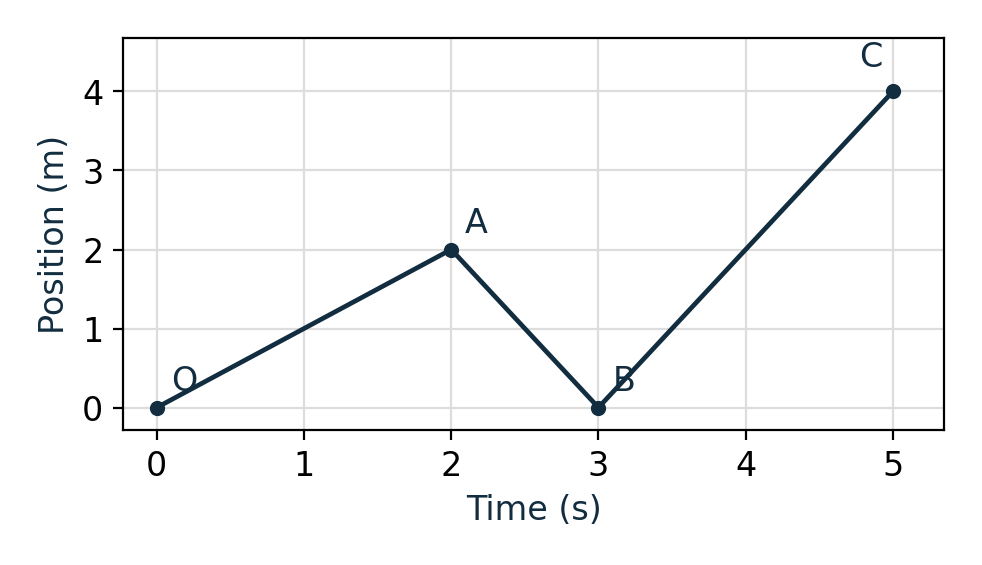
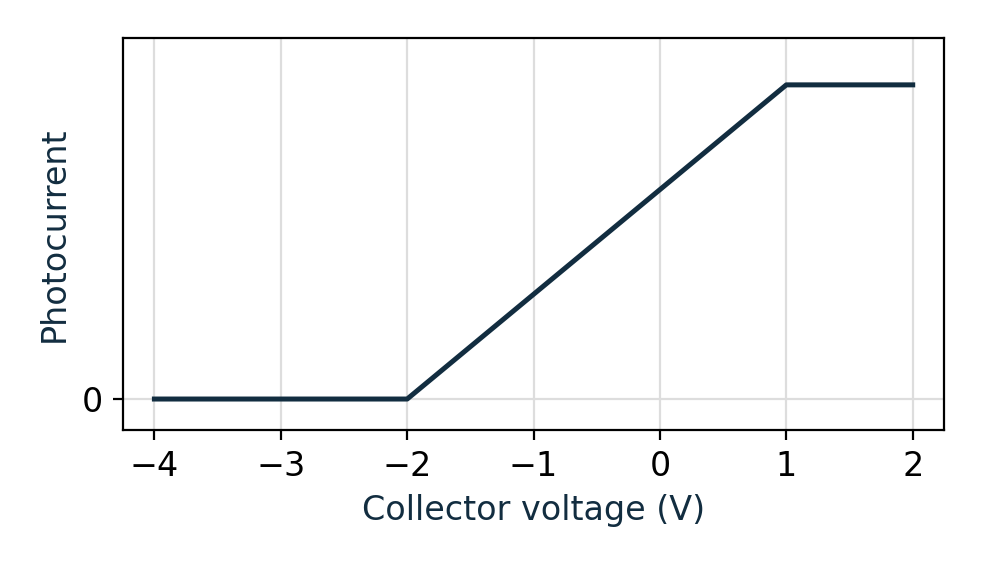
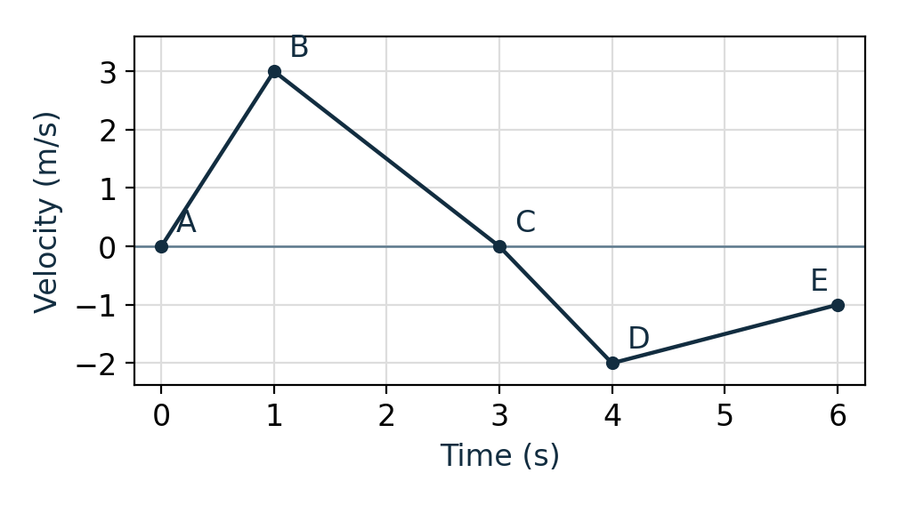
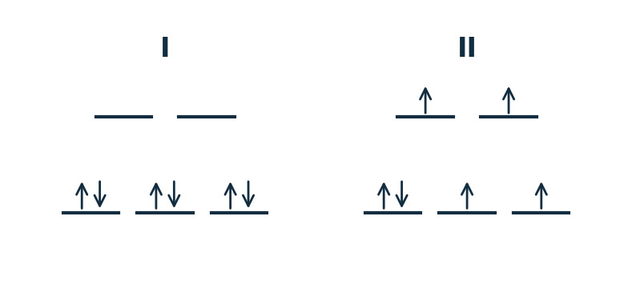
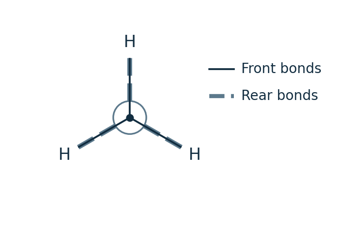
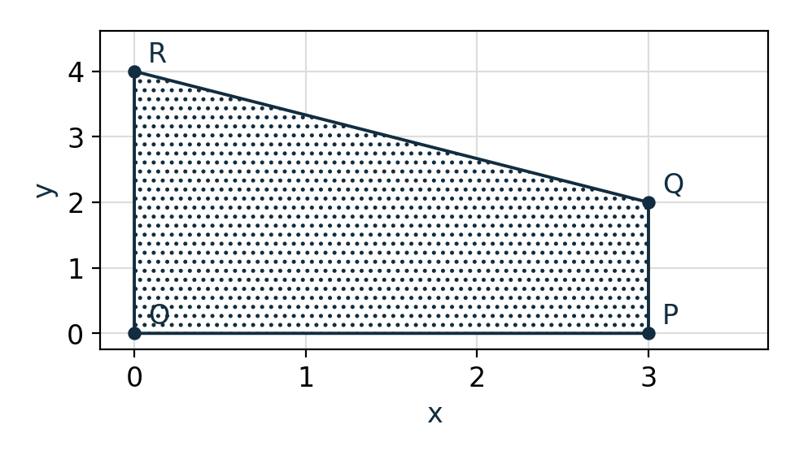

COMEDK UGET Test 23
180 minutes · 180 questions · +1 per correct answer · No negative marking
Physics
Q001. A charged parallel-plate capacitor is disconnected from its battery. Its plate area and separation are then both doubled, with air still filling the gap. What happens to the potential difference?
A) It doubles
B) It halves
C) It stays the same
D) It becomes zero
Worked solution
Answer: (C) It stays the same
Why and working: Capacitance ε₀A/d is unchanged when both A and d double. The isolated free charge remains fixed, so V=Q/C stays unchanged.
Why not the others: (A) assumes a net drop of capacitance. (B) assumes a net increase of capacitance. (D) disconnection does not make the stored charge vanish.
Q002. A load of weight W stretches a vertical spring by d. An additional load of weight W/2 is then attached slowly. What is the new equilibrium extension from natural length?
A) d/2
B) 2d
C) 3d
D) 3d/2
Worked solution
Answer: (D) 3d/2
Why and working: In equilibrium kx equals the combined weight. Since k=W/d and the new weight is 3W/2, the extension is 3d/2.
Why not the others: (A) gives only the added extension. (B) assumes the additional load has weight W. (C) treats the half load as twice the original load.
Q003. A 12 V ideal source feeds a 2 Ω resistor before a junction. Beyond it, 4 Ω and 12 Ω paths return to the source in parallel. What current flows through the 12 Ω path?
A) 1.00 A
B) 1.80 A
C) 0.60 A
D) 2.40 A
Worked solution
Answer: (C) 0.60 A
Why and working: The parallel load gives 3 Ω. Source current is 12/(2+3)=2.4 A, so 7.2 V appears across the load. The 12 Ω branch carries 7.2/12=0.60 A.
Why not the others: (A) uses the full source voltage across the branch. (B) gives the 4 Ω branch current. (D) gives the total current entering the junction.
Q004. A planar coil has initial torque τ when its magnetic moment is at 30° to the field. The current is reversed and doubled in magnitude without moving the coil. How does its torque vector change?
A) It becomes −2 times the original
B) It becomes +2 times the original
C) It becomes minus half the original
D) It becomes zero
Worked solution
Answer: (A) It becomes −2 times the original
Why and working: The moment is proportional to signed current for a fixed coil. Hence m changes to −2m, and the cross product m×B changes by the same signed factor.
Why not the others: (B) forgets that the moment reverses. (C) inverts the magnitude change. (D) current reversal does not align the moment with the field.
Q005. A right-going crest of displacement +3 mm overlaps a left-going trough of displacement −5 mm at one point. In the linear wave model, what displacement is measured there?
A) +2 mm
B) −8 mm
C) −2 mm
D) +8 mm
Worked solution
Answer: (C) −2 mm
Why and working: Superposition adds the signed displacements, +3+(−5)=−2 mm. The resultant lies below equilibrium.
Why not the others: (A) takes the absolute magnitude only. (B) subtracts the crest from the trough. (D) adds absolute values.
Q006. Inside a symmetric prism at minimum deviation, the refraction angle at the first face is 25°. What is the prism angle?
A) 25°
B) 50°
C) 65°
D) 75°
Worked solution
Answer: (B) 50°
Why and working: The minimum-deviation path is symmetric, so both internal angles to the face normals are 25°. Their sum equals the prism angle, 50°.
Why not the others: (A) uses just one internal angle. (C) subtracts from 90° instead of adding both angles. (D) counts three equal angles.
Q007. A thin uniformly charged spherical shell gives a field of 12 N/C at radius 3R measured from its centre, where R is its radius. What ordered fields are measured at R/2 and 2R?
A) 3 and 27 N/C
B) 0 and 27 N/C
C) 0 and 18 N/C
D) 48 and 27 N/C
Worked solution
Answer: (B) 0 and 27 N/C
Why and working: With a concentric Gaussian sphere the net enclosed charge is zero inside the shell. Outside, E scales as 1/r², so E(2R)=12×(3/2)²=27 N/C.
Why not the others: (A) incorrectly gives a nonzero interior field. (C) uses inverse-distance rather than inverse-square scaling outside. (D) interior points cannot use the exterior formula.
Q008. A clockmaker knows a period T scales as g raised to power a and length L raised to power b. If no other dimensional quantity enters, which pair (a,b) is possible?
A) (−1/2,1/2)
B) (1/2,−1/2)
C) (−1,1)
D) (0,1)
Worked solution
Answer: (A) (−1/2,1/2)
Why and working: Dimensions give [L]^(a+b)[T]^(−2a). Matching time requires −2a=1 and a+b=0, yielding −1/2 and +1/2.
Why not the others: (B) gives inverse time. (C) gives time squared. (D) leaves a length dimension.
Q009. Two capacitors at the same voltage have capacitances C and 3C. How do their stored energies compare, larger to smaller?
A) 9:1
B) 1:3
C) 1:1
D) 3:1
Worked solution
Answer: (D) 3:1
Why and working: Use U=½CV². At the same voltage the energy ratio equals the capacitance ratio.
Why not the others: (A) squares capacitance instead of voltage. (B) reverses the requested order. (C) equal voltage does not equate stored energies.
Q010. A Wheatstone bridge initially balances. All four arms are multiplied by the same factor, and the supply voltage is increased separately. What happens to the detector reading in the ideal bridge?
A) It increases by the supply-voltage factor
B) It remains zero
C) It reverses sign
D) It depends on the absolute arm values even with their ratios unchanged
Worked solution
Answer: (B) It remains zero
Why and working: The two midpoint voltages each equal the same fraction of the supply voltage because the arm ratios still match. The detector still sees no potential difference.
Why not the others: (A) a larger voltage shares between the arms in the same ratio. (C) there is no initial imbalance to reverse. (D) balance is set by ratios.
Q011. In the position–time diagram, segment OA and segment BC both have positive slopes. How does the velocity on BC compare with that on OA?

A) It is half as large
B) It is the same
C) It is twice as large
D) It is downward with twice the speed
Worked solution
Answer: (C) It is twice as large
Why and working: From the graph OA rises 2 m in 2 s, giving 1 m/s. BC rises 4 m in 2 s, giving 2 m/s, so the second velocity doubles.
Why not the others: (A) inverts the slopes. (B) equal durations do not imply equal displacement. (D) both slopes are positive.
Q012. A galvanometer with resistance 40 Ω is converted into an ammeter using a 10 Ω shunt. At a total current of 20 mA, how much current passes through the galvanometer itself?
A) 4 mA
B) 5 mA
C) 16 mA
D) 20 mA
Worked solution
Answer: (A) 4 mA
Why and working: The parallel branches have equal voltage, so I_s/I_g=40/10=4. Thus 20 mA=5I_g and the movement carries 4 mA.
Why not the others: (B) divides total by four rather than five. (C) gives the shunt branch current. (D) ignores the shunt entirely.
Q013. A compound microscope is adjusted with a shorter focal length eyepiece while keeping the objective image and tube arrangement suitable for the same final viewing condition. Which component's angular factor increases?
A) The eyepiece factor
B) Only the objective factor
C) Neither factor
D) Both through equal changes in lens material
Worked solution
Answer: (A) The eyepiece factor
Why and working: At the same final eye condition the eyepiece angular factor is larger for shorter focal length. Objective linear magnification is set by its given intermediate image.
Why not the others: (B) the objective's intermediate image is unchanged. (C) eyepiece focal length controls its angular factor. (D) no lens-material change is required.
Q014. A drone's first displacement is 5 m east and 4 m north. Its second is 2 m west and 1 m south. What is its total displacement magnitude?
A) 8 m
B) 3√2 m
C) 6 m
D) √58 m
Worked solution
Answer: (B) 3√2 m
Why and working: Signed component sums are 5−2=3 m east and 4−1=3 m north. Perpendicular components give norm √(9+9).
Why not the others: (A) does not follow from the vector sum. (C) adds the two net components without resolving them as orthogonal. (D) fails to subtract the reverse components correctly.
Q015. Two visual astronomical telescopes use objectives of equal focal length. One eyepiece has half the focal length of the other. With normal adjustment, how do their magnifying-power magnitudes compare?
A) The shorter eyepiece gives half the magnification
B) They agree because only the objective matters
C) The shorter eyepiece gives four times the magnification
D) The shorter eyepiece gives twice the magnification
Worked solution
Answer: (D) The shorter eyepiece gives twice the magnification
Why and working: For normal adjustment the angular magnification has magnitude f_o/f_e. Halving f_e doubles this ratio.
Why not the others: (A) takes the ratio in the wrong direction. (B) eyepiece angle depends on focal length. (C) squares a linear ratio.
Q016. Three isolated conducting spheres carry charges −6, +2 and +10 nC. The first two identical spheres touch and separate. The first sphere then touches an uncharged sphere identical to itself and separates again. What is the final charge on the first sphere?
A) −2 nC
B) +1 nC
C) −1 nC
D) +2 nC
Worked solution
Answer: (C) −1 nC
Why and working: The first contact shares −4 nC equally, giving −2 nC on each. The second contact shares that −2 nC equally with the neutral fourth sphere, leaving −1 nC on the first.
Why not the others: (A) reports the value before the second contact. (B) loses the negative charge sign. (D) includes positive charge on an untouched sphere.
Q017. A magnet pulls a steel clip above a table, and the clip moves upward. What is the third-law partner of the upward magnetic force on the clip?
A) The clip's weight
B) The clip's upward acceleration
C) The downward magnetic force of the clip on the magnet
D) The table's upward force on the magnet
Worked solution
Answer: (C) The downward magnetic force of the clip on the magnet
Why and working: The interacting objects are magnet and clip. If the magnet pulls the clip upward, the clip pulls the magnet down with equal force magnitude.
Why not the others: (A) is Earth's force on the clip, a different interaction. (B) acceleration is not a force. (D) includes the wrong pair of objects.
Q018. A negative point charge has potential −18 V at distance r. What potential does it give at 3r with the same zero reference?
A) +6 V
B) −6 V
C) −54 V
D) −2 V
Worked solution
Answer: (B) −6 V
Why and working: Potential from a fixed point charge varies as q/r. Tripling distance divides its value by three and preserves the sign.
Why not the others: (A) the charge remains negative. (C) takes direct rather than inverse scaling. (D) uses the inverse-square dependence of electric field.
Q019. A uniform wire carries current I with electron drift speed v. The same material is used in a wire of four times the area, carrying current 2I. How does the new drift speed compare?
A) v/2
B) 2v
C) 4v
D) v/4
Worked solution
Answer: (A) v/2
Why and working: Since I=neAv, the unchanged carrier density and charge give v_new/v=(2I/I)/(4A/A)=1/2.
Why not the others: (B) ignores the changed cross section. (C) uses only the area change in the wrong direction. (D) ignores the current increase.
Q020. A spring stores energy U at extension x. How much extra energy must be supplied to reach extension 2x without changing the spring?
A) 4U
B) 3U
C) 2U
D) U
Worked solution
Answer: (B) 3U
Why and working: With U=½kx² the final stored energy is 4U. The requested increment is 4U−U=3U.
Why not the others: (A) gives total final energy. (C) uses linear scaling. (D) confuses the energy change with one original energy unit.
Q021. A compass below a straight wire deflects when the wire carries DC. The battery terminals are reversed while wire position and current magnitude are unchanged. How does the wire's contribution to the field at the compass change?
A) It keeps direction and doubles in magnitude
B) It vanishes
C) It points along the wire
D) It reverses direction with unchanged magnitude
Worked solution
Answer: (D) It reverses direction with unchanged magnitude
Why and working: The magnetic field circulates around the wire. Reversing current reverses that circulation while leaving its magnitude intact at a fixed point.
Why not the others: (A) would require no reversal and a larger current. (B) nonzero current still produces a field. (C) the field encircles the conductor.
Q022. A compass compares two short coils of equal area at the same distant axial position. Coil A has twice the turns of coil B but carries half its current in the opposite winding sense. What is the relation between their equivalent magnetic moments?
A) Equal magnitudes in the same direction
B) Equal magnitudes with opposite directions
C) Coil A has twice the magnitude in the same direction
D) Coil A has one quarter the magnitude opposite to B
Worked solution
Answer: (B) Equal magnitudes with opposite directions
Why and working: The magnitude of a coil moment is NIA. The factors 2 and 1/2 cancel, and reversing current circulation reverses the direction by the right-hand rule.
Why not the others: (A) ignores the direction of circulation. (C) ignores the halving and reversal of current. (D) applies the turn-count change in the wrong direction.
Q023. A rotating student holds two small weights far from the rotation axis and then pulls both inward. Total moment of inertia becomes two thirds of its initial value. With negligible external torque, what is the new angular speed?
A) 3/2 times the initial value
B) 2/3 times the initial value
C) The same as initially
D) 9/4 times the initial value
Worked solution
Answer: (A) 3/2 times the initial value
Why and working: Angular momentum Iω is conserved. Solving (2I/3)ω_new=Iω_old gives ω_new=3ω_old/2.
Why not the others: (B) uses direct instead of inverse proportionality. (C) would change angular momentum. (D) squares the needed factor.
Q024. Two identical loops of area A begin with their normals parallel to a uniform field B, connected in series so flux changes add. One loop turns until its normal is perpendicular to B. The other turns until its normal is antiparallel. What is total final minus initial flux linkage?
A) −BA
B) −3BA
C) +BA
D) −2BA
Worked solution
Answer: (B) −3BA
Why and working: The first final flux is zero and the second is −BA. Initially each had +BA; the total change is −BA−2BA=−3BA.
Why not the others: (A) gives the sum of final flux values only. (C) ignores the signs of the rotations. (D) counts only the reversal in the second loop.
Q025. An AC current in a resistor is i=3+4 cos ωt amperes. What is its rms value over one full period?
A) 5 A
B) 7 A
C) √17 A
D) √13 A
Worked solution
Answer: (C) √17 A
Why and working: Square before averaging: i²=9+24 cos ωt+16 cos² ωt. The cross term averages to zero and the last term averages to eight. Taking the square root gives √17.
Why not the others: (A) uses peak sinusoidal contribution without averaging its square. (B) gives the maximum current. (D) incorrectly averages the cosine-square term.
Q026. For a uniform-density spherical planet, what fraction of the surface value has gravity fallen by the time a probe reaches a point 0.40R from the centre?
A) 0.60
B) 0.40
C) 0.16
D) 0.84
Worked solution
Answer: (A) 0.60
Why and working: Inside a uniform sphere g(r)/g(R)=r/R. At 0.40R the remaining value is 0.40 of the surface value, so the fractional loss is 0.60.
Why not the others: (B) gives the remaining fraction rather than the loss. (C) squares the radius fraction. (D) subtracts the squared radius ratio from one.
Q027. Neglect edge effects in a charging parallel-plate capacitor. A surface spans only the central third of the plate area in the gap and its normal points along the increasing electric field. If the charging current is I, what displacement-current magnitude crosses this smaller surface?
A) I
B) 3I
C) I/3
D) Zero
Worked solution
Answer: (C) I/3
Why and working: In the ideal model the changing field is uniform across the area. The small surface intercepts one third of the changing electric flux, so its displacement current is one third of the full-gap value I.
Why not the others: (A) counts the whole plate area. (B) inverts the fraction of intercepted flux. (D) there is changing flux without conduction across the gap.
Q028. A concave mirror gives a virtual upright image three times as tall when the object is 8 cm in front of it. What is the signed focal length using the Cartesian convention?
A) +12 cm
B) −12 cm
C) −6 cm
D) +24 cm
Worked solution
Answer: (B) −12 cm
Why and working: With u=−8 cm and magnification −v/u=+3, v=+24 cm. Thus 1/f=1/u+1/v=−1/8+1/24=−1/12 per cm.
Why not the others: (A) forgets the concave mirror focal sign. (C) does not use the virtual image distance correctly. (D) reports the image distance.
Q029. A thin rod under tension has axial strain +0.004 and transverse strain −0.001. What Poisson ratio follows?
A) −0.25
B) 4
C) −4
D) 0.25
Worked solution
Answer: (D) 0.25
Why and working: Poisson ratio is minus transverse strain divided by axial strain. Hence −(−0.001)/0.004=0.25.
Why not the others: (A) drops the defining minus sign. (B) inverts the positive ratio. (C) inverts the ratio and misses the sign convention.
Q030. An ideal spherical wave travels outward in a homogeneous medium. Which shape describes the equal-phase surface a short time later?
A) A smaller sphere with the same centre
B) A plane tangent to the whole earlier wavefront
C) A sphere whose centre moves by one radius
D) A larger sphere with the same centre
Worked solution
Answer: (D) A larger sphere with the same centre
Why and working: Every direction advances equally in the uniform medium. The envelope of secondary wavelets therefore retains spherical symmetry and grows outward from the same centre.
Why not the others: (A) describes inward propagation. (B) a plane is only a local tangent approximation. (C) uniform propagation preserves the source centre.
Q031. On the plotted photocurrent curve for one metal, the 0 V current is nonzero. What collector voltage first stops it as the collector is made negative?

A) +2 V
B) 0 V
C) −4 V
D) −2 V
Worked solution
Answer: (D) −2 V
Why and working: The curve reaches the horizontal zero-current axis at −2 V and remains zero for more negative bias. The stopping potential magnitude is 2 V, with a negative applied voltage.
Why not the others: (A) gives the magnitude with the wrong polarity. (B) there is a current at zero bias. (C) the photocurrent has already stopped before −4 V.
Q032. Two solid spheres in the same viscous fluid have the same excess density over the fluid. Both stay in the Stokes regime and one radius is twice the other. What is the ratio larger:smaller of their terminal speeds?
A) 2:1
B) 4:1
C) 8:1
D) 1:4
Worked solution
Answer: (B) 4:1
Why and working: Effective weight scales as r³ and drag at fixed speed as r. Equating drag and weight gives terminal speed proportional to r², so the ratio is 4.
Why not the others: (A) uses only one factor of radius. (C) uses volume scaling alone. (D) inverts the requested order.
Q033. In a Rutherford-style scattering comparison at the same incident energy, targets have the same atomic size but different nuclear positive charges. For a head-on alpha particle, what happens to the closest approach distance if nuclear charge doubles?
A) It halves
B) It stays the same
C) It increases fourfold
D) It doubles
Worked solution
Answer: (D) It doubles
Why and working: At closest approach in the fixed-nucleus model, kinetic energy has converted to Coulomb potential energy kqQ/r. At fixed incident energy and alpha charge, r is proportional to Q.
Why not the others: (A) reverses the scaling. (B) ignores the changed repulsion. (C) squares the nuclear-charge factor.
Q034. A nucleus contains 19 protons and 20 neutrons. What is its mass number?
A) 19
B) 20
C) 39
D) 1
Worked solution
Answer: (C) 39
Why and working: Mass number counts the nucleons, protons plus neutrons, so it is 19+20=39.
Why not the others: (A) gives atomic number. (B) gives the neutron count. (D) gives the excess neutron count.
Q035. Equal masses of water receive 840 J each. One is already at boiling and the heat changes its phase only. Which statement about that sample is correct?
A) Its temperature stays at the boiling point while a fraction vaporises at fixed pressure
B) Its temperature rises by the same amount as sub-boiling water with no phase change
C) Its temperature necessarily falls during boiling
D) It absorbs no energy because its temperature does not change
Worked solution
Answer: (A) Its temperature stays at the boiling point while a fraction vaporises at fixed pressure
Why and working: At the boiling point and fixed pressure, heat can supply latent heat to convert liquid to vapour without increasing temperature.
Why not the others: (B) compares sensible heating with phase change. (C) temperature is fixed during equilibrium boiling at fixed pressure. (D) latent heat provides energy for the phase transition.
Q036. In a simple band model, heating generates significant numbers of electrons and holes in material X but very few in material Y. Both have filled valence bands at zero temperature. Which is consistent with X conducting better after heating?
A) X has a much larger gap than Y
B) X has a smaller band gap than Y
C) X has no conduction-band states at all
D) The gaps cannot affect thermal carriers
Worked solution
Answer: (B) X has a smaller band gap than Y
Why and working: Thermal excitation promotes electrons across the gap and leaves holes. At the same temperature a smaller gap is generally easier to bridge.
Why not the others: (A) would suppress thermal carrier production. (C) mobile promoted electrons need available states. (D) gap size strongly affects excitation.
Q037. Charges +q and −q lie at x=−a and x=+a. At the origin their fields are added. What net field results, with E₀ the field magnitude from one charge there?
A) 2E₀ toward +x
B) Zero
C) 2E₀ toward −x
D) E₀ toward +x
Worked solution
Answer: (A) 2E₀ toward +x
Why and working: The field points away from the positive left charge and toward the negative right one. Both point along +x, and their equal magnitudes add.
Why not the others: (B) treats opposite charge signs as implying opposite directions at the midpoint. (C) reverses both component directions. (D) counts only one source.
Q038. Two bodies exchange heat in an isolated arrangement with no work transfer. Which spontaneous direction is consistent with the second law?
A) From the colder one to the hotter one only
B) From the hotter body to the colder one
C) Either direction simply because total energy is conserved
D) No transfer at any temperature difference
Worked solution
Answer: (B) From the hotter body to the colder one
Why and working: For a small heat Q flowing hot to cold, entropy changes by Q/T_c−Q/T_h>0. The reverse unassisted transfer would lower total entropy.
Why not the others: (A) would lower the total entropy. (C) energy conservation alone does not determine direction. (D) thermal contact with a temperature difference permits heat transfer.
Q039. At point P, a charge +2q is distance d away while charge −q is distance d/2 away. What is the net electric potential there if zero is at infinity?
A) 3kq/d
B) 4kq/d
C) kq/d
D) Zero
Worked solution
Answer: (D) Zero
Why and working: Potential adds algebraically. The two terms are +2kq/d and −kq/(d/2)=−2kq/d, which cancel.
Why not the others: (A) adds charge magnitudes without handling distances. (B) adds potential magnitudes despite opposite signs. (C) uses the wrong distance factor for the negative charge.
Q040. A material with positive carrier charge magnitude e and density n carries current density J=n e μE in the linear regime. Its mobility increases by 25% at fixed carrier density. How much must E change to keep J constant?
A) Decrease by 25%
B) Increase by 25%
C) Stay fixed
D) Decrease by 20%
Worked solution
Answer: (D) Decrease by 20%
Why and working: Inserting μ_new=1.25μ gives E_new=E/1.25=0.80E. The decline from the old value is 20%.
Why not the others: (A) confuses the reciprocal factor with subtracting the same percent. (B) would increase the current density twice over. (C) would allow the current density to increase.
Q041. An ideal gas sample of rigid diatomic molecules has vibrations inactive. An equal-number sample of monatomic molecules receives the same heat at fixed volume. What is the ratio of diatomic to monatomic temperature rises?
A) 5:3
B) 1:1
C) 3:2
D) 3:5
Worked solution
Answer: (D) 3:5
Why and working: At fixed volume Q=Nf k_BΔT/2. The diatomic gas has three translational and two rotational modes, f=5, while the monatomic gas has f=3. Equal Q and N give the inverse ratio 3/5.
Why not the others: (A) uses heat-capacity ratio instead of its inverse. (B) ignores rotation. (C) counts only the two extra rotational degrees.
Q042. Two concentric coplanar circular loops of radii r and 2r carry opposite currents. The smaller loop carries I. What current magnitude in the larger loop makes the net central field half that of the smaller loop alone, in the smaller loop's field direction?
A) I/2
B) I
C) 2I
D) 3I
Worked solution
Answer: (B) I
Why and working: The larger field must oppose and have magnitude half the smaller field. The central field scales as current divided by radius. At twice the radius, an equal current produces half the field.
Why not the others: (A) would produce only one quarter of the smaller field. (C) would cancel the central field completely. (D) would reverse the net field direction.
Q043. A short dipole has the same field magnitude at an axial point at distance r_a and an equatorial point at distance r_e. What is r_a/r_e?
A) 2
B) 1/2
C) Cube root of 2
D) Square root of 2
Worked solution
Answer: (C) Cube root of 2
Why and working: Equate 2k m/r_a³ and k m/r_e³ for the axial and equatorial magnitudes in the dipole limit. Rearrangement gives (r_a/r_e)³=2.
Why not the others: (A) ignores inverse-cube scaling. (B) uses the wrong radius order and linear scaling. (D) treats the field as inverse-square.
Q044. At an instant in SHM the kinetic energy is three times the potential energy. If amplitude is A, what distance from equilibrium is possible then?
A) A/4
B) 3A/4
C) A/2
D) √3 A/2
Worked solution
Answer: (C) A/2
Why and working: Three kinetic parts and one potential part make the total, so U/E=1/4. Since U/E=x²/A², the distance is A/2.
Why not the others: (A) uses the energy fraction as a displacement fraction. (B) uses kinetic fraction in place of its complement. (D) assigns three quarters of the energy to potential energy.
Q045. The flux linkage through a coil varies as Ψ(t)=0.20−0.04t Wb-turn for two seconds. What induced current magnitude flows if total loop resistance is 0.50 Ω and other emf is absent?
A) 0.080 A
B) 0.040 A
C) 0.160 A
D) 0.400 A
Worked solution
Answer: (A) 0.080 A
Why and working: Faraday's law gives emf magnitude 0.04 V from the flux-linkage slope. Divide by 0.50 Ω, yielding 0.08 A throughout the interval.
Why not the others: (B) gives volts rather than current. (C) multiplies by duration despite a constant slope. (D) uses the initial linkage as voltage.
Q046. A series AC branch has R=8 Ω and net reactance +6 Ω. The drive frequency is changed so the net reactance becomes −6 Ω with R unchanged. What happens to impedance magnitude?
A) It changes from 14 to 2 Ω
B) It becomes 6 Ω
C) It doubles
D) It is unchanged at 10 Ω
Worked solution
Answer: (D) It is unchanged at 10 Ω
Why and working: Impedance magnitude is √(R²+X²), independent of the sign of X. With 8 and 6 the magnitude is 10 Ω in both cases.
Why not the others: (A) adds signed resistance and reactance as scalars. (B) omits the resistive component. (C) the square of net reactance is unchanged.
Q047. A light ray strikes a flat mirror at 35° to its reflecting surface. What is its reflected angle measured from the normal?
A) 35°
B) 70°
C) 55°
D) 110°
Worked solution
Answer: (C) 55°
Why and working: The incident angle from the normal is 90°−35°=55°. The law of reflection equates that with the reflected angle from the normal.
Why not the others: (A) uses the surface as reference. (B) doubles the surface angle. (D) doubles the angle from the normal.
Q048. Two electromagnetic wave snapshots have the same electric-field direction at one point but opposite propagation directions. How must their magnetic-field directions at that point compare?
A) They are opposite
B) They necessarily agree
C) One is parallel to the common electric field
D) Both point along the direction of propagation
Worked solution
Answer: (A) They are opposite
Why and working: Each magnetic field is perpendicular to the common E and its respective propagation direction. To change E×B to the opposite direction at fixed E orientation, B must reverse.
Why not the others: (B) would give the same propagation direction. (C) would give a zero cross product. (D) the magnetic field is transverse to propagation.
Q049. A ray in a dense medium meets air at an incidence whose sine is 0.75. The critical-angle sine for that boundary is 0.80. Which statement is correct?
A) It is totally internally reflected
B) It travels along the boundary in air
C) No refraction occurs because both sines are below one
D) The transmitted ray can enter air and bends away from the normal
Worked solution
Answer: (D) The transmitted ray can enter air and bends away from the normal
Why and working: Incidence is below critical since sine increases over acute angles. A refracted ray exists and bends away from the normal on entering the less dense medium.
Why not the others: (A) requires incidence above critical. (B) would occur exactly at critical incidence. (C) a lower index produces refraction even when a propagating ray exists.
Q050. Using the signed velocity diagram, between what two adjacent marked times does the object have negative acceleration but positive displacement?

A) From A to B
B) From C to D
C) From D to E
D) From B to C
Worked solution
Answer: (D) From B to C
Why and working: B to C has a falling trace wholly above zero except at C. Its slope is negative and its signed area positive. C to D is also falling but lies below zero.
Why not the others: (A) the trace rises on A to B. (B) the area here is negative. (C) the trace rises on D to E.
Q051. A plane wavefront enters obliquely into a medium where its speed is half the initial value. In the Huygens construction for two points separated along the boundary by d, the incident sine is 3/5. What sine follows for the refracted ray angle?
A) 6/5
B) 3/10
C) 3/5
D) 2/5
Worked solution
Answer: (B) 3/10
Why and working: During the same interval Δt the relevant wavelet distances are v₁Δt and v₂Δt. Their ratios to the common boundary length are sin i and sin r. Hence sin r=(v₂/v₁)sin i=3/10.
Why not the others: (A) reverses the speed ratio and gives an impossible sine. (C) would require equal speeds. (D) does not satisfy the wavefront ratio.
Q052. Incident photons for a metal each have energy twice the work function. What is the maximum photoelectron kinetic energy?
A) One work function
B) Half a work function
C) Two work functions
D) Zero
Worked solution
Answer: (A) One work function
Why and working: The Einstein relation K_max=hν−ϕ subtracts the escape cost from the photon energy. Here it gives 2ϕ−ϕ=ϕ.
Why not the others: (B) would follow from photon energy 1.5ϕ. (C) fails to subtract the escape cost. (D) would correspond to threshold illumination.
Q053. Which vector is a unit vector parallel to and in the same sense as (−2,0,2)?
A) (−1/√2,0,1/√2)
B) (1/√2,0,−1/√2)
C) (−1,0,1)
D) (−1/2,0,1/2)
Worked solution
Answer: (A) (−1/√2,0,1/√2)
Why and working: Divide each component by the norm √(4+4)=2√2. Division by this positive magnitude preserves direction.
Why not the others: (B) reverses the sense. (C) has length √2. (D) has length 1/√2.
Q054. A Bohr orbit in hydrogen has radius 16a₀. How many times larger is its radius than the orbit immediately below it?
A) 16/9
B) 4/3
C) 2
D) 15/16
Worked solution
Answer: (A) 16/9
Why and working: The radius is n²a₀, so n=4 and the preceding orbit has n=3. Their radii have ratio 16/9.
Why not the others: (B) gives the ratio of quantum numbers alone. (C) does not use the two square values. (D) keeps the preceding squared radius almost equal to the upper one.
Q055. A reaction releases 12 MeV while conserving charge and nucleon number. How does the total rest mass change from reactants to products?
A) It increases by 12 MeV/c²
B) It decreases by 12 MeV multiplied by c²
C) It remains fixed because nucleon number is conserved
D) It decreases by 12 MeV/c²
Worked solution
Answer: (D) It decreases by 12 MeV/c²
Why and working: Net energy release comes from a drop in rest energy. Therefore (m_before−m_after)c²=12 MeV.
Why not the others: (A) would require extra energy to create rest mass. (B) has the wrong mass–energy conversion. (C) binding-energy changes can change rest mass at fixed nucleon count.
Q056. An isolated platform initially at rest ejects two identical parcels simultaneously, one east at 3 m/s and one north at 4 m/s in the ground frame. If each parcel has mass 1 kg, what is the magnitude of the platform's residual momentum?
A) 5 kg·m/s
B) 7 kg·m/s
C) 1 kg·m/s
D) Zero
Worked solution
Answer: (A) 5 kg·m/s
Why and working: The parcels' total momentum has east and north components 3 and 4 kg·m/s. The platform must take its opposite to conserve zero total momentum. Its norm is 5 kg·m/s.
Why not the others: (B) adds magnitudes of perpendicular vectors. (C) subtracts magnitudes of perpendicular vectors. (D) the parcel momenta are not opposite.
Q057. An intrinsic silicon sample becomes n-type by adding a small concentration of pentavalent donors. Which statement is true in the usual fully ionised donor model?
A) The entire crystal acquires a negative net charge
B) Free electrons disappear and holes become majority carriers
C) Mobile electrons increase and holes are minority carriers
D) Every donor joins the lattice as a moving positive ion
Worked solution
Answer: (C) Mobile electrons increase and holes are minority carriers
Why and working: Donors provide mobile electrons and leave positive ions bound to the lattice. The bulk stays approximately neutral, with electrons the majority carriers.
Why not the others: (A) fixed ion charge balances the added carrier charge. (B) describes acceptor doping rather than donor doping. (D) the dopant ions are fixed in the crystal.
Q058. An insulating rod of length L carries linear density λ(x)=λ₀(1+2x/L), with x measured from its left end. How much charge lies in the right half?
A) λ₀L
B) 5λ₀L/4
C) 3λ₀L/4
D) 2λ₀L
Worked solution
Answer: (B) 5λ₀L/4
Why and working: Integrate λ₀(1+2x/L) from L/2 to L. The primitive λ₀(x+x²/L) changes from 3λ₀L/4 to 2λ₀L, giving 5λ₀L/4.
Why not the others: (A) treats half the rod as carrying half the total charge. (C) gives the left half's charge. (D) gives the total rod charge.
Q059. A cart starts and ends at rest on the same level after completing a loop. Its motor does +40 J of work, and a brake does −15 J. Gravity and the normal force give zero net work. What work must other dissipative forces have done?
A) +25 J
B) −55 J
C) −25 J
D) Zero
Worked solution
Answer: (C) −25 J
Why and working: The net work equals the change of kinetic energy, here zero. Thus 40−15+W=0 gives W=−25 J.
Why not the others: (A) changes the sign of the needed energy loss. (B) treats brake work as positive. (D) would leave positive net work despite zero kinetic change.
Q060. Two nearby marked points are on the same equipotential line in a static field. What is the electric field's work on a test charge moved between the points along any permitted path?
A) Positive on every curved path
B) Proportional to the path length
C) Zero
D) Equal to q times the potential value itself
Worked solution
Answer: (C) Zero
Why and working: Electrostatic work is q(V_start−V_end), which vanishes when the two potentials match.
Why not the others: (A) path curvature does not change electrostatic work. (B) work is path independent here. (D) a potential difference is required.
Chemistry
Q061. A solution contains 0.60 mol solute and 0.40 kg solvent. Adding more solvent brings the solvent mass to 0.75 kg without losing solute. What is the new molality?
A) 1.50 mol/kg
B) 0.52 mol/kg
C) 0.80 mol/kg
D) 1.25 mol/kg
Worked solution
Answer: (C) 0.80 mol/kg
Why and working: Molality divides solute moles by solvent kilograms. The final ratio is 0.60/0.75=0.80 mol/kg.
Why not the others: (A) uses the original solvent mass. (B) adds the old and new total solvent masses. (D) takes the reciprocal ratio.
Q062. What is sulfur's oxidation number in HSO₄⁻?
A) +6
B) +5
C) +7
D) −6
Worked solution
Answer: (A) +6
Why and working: Hydrogen contributes +1 and four oxygens contribute −8. Setting 1+x−8=−1 gives x=+6.
Why not the others: (B) miscounts the ion charge or the oxygen total. (C) sets the total charge to zero. (D) reverses the sulfur sign.
Q063. The standard reduction potentials of two couples are E°(X²⁺/X)=−0.35 V and E°(Y²⁺/Y)=+0.15 V. What cell emf does spontaneous combination give?
A) +0.50 V
B) −0.50 V
C) +0.20 V
D) +1.00 V
Worked solution
Answer: (A) +0.50 V
Why and working: Y²⁺ reduces at the more positive cathode, while X oxidises. E°_cell=0.15−(−0.35)=0.50 V.
Why not the others: (B) corresponds to the reverse reaction. (C) takes the magnitude of the sum of reduction potentials. (D) electrode potentials do not double with electron count.
Q064. A reactant concentration is 0.82 M at 4 s and 0.70 M at 10 s. Its concentration-time tangent at 4 s passes through (2 s,0.90 M). How much larger is the initial instantaneous disappearance rate than the later 4–10 s interval average?
A) 0.040 M/s
B) 0.020 M/s
C) 0.060 M/s
D) Zero
Worked solution
Answer: (B) 0.020 M/s
Why and working: The tangent slope at 4 s is (0.82−0.90)/(4−2)=−0.040 M/s. The secant through 4 and 10 s gives −0.020 M/s. Subtract their positive disappearance rates to get 0.020 M/s.
Why not the others: (A) gives only the initial instantaneous rate. (C) adds the two positive rates. (D) the tangent and secant slopes differ.
Q065. In sodium-fusion analysis of an organic compound, the prepared extract gives a black precipitate with lead acetate under the usual test conditions. Which element does that indicate?
A) Nitrogen only
B) Phosphorus only
C) Oxygen only
D) Sulfur
Worked solution
Answer: (D) Sulfur
Why and working: Fusion converts bound sulfur to soluble sulfide. Lead ions yield black PbS with sulfide, providing the sulfur signal.
Why not the others: (A) the standard nitrogen test instead gives a blue complex. (B) black PbS specifically requires sulfide. (C) oxygen in the molecule is not diagnosed by PbS.
Q066. Which first-row d-block element in its neutral ground state and common +2 ion lacks a partially filled d subshell in both forms?
A) Copper
B) Iron
C) Zinc
D) Nickel
Worked solution
Answer: (C) Zinc
Why and working: Zn is [Ar]3d¹⁰4s² and Zn²⁺ is [Ar]3d¹⁰. Both have a filled d subshell so zinc is excluded by the strict transition-element definition.
Why not the others: (A) Cu²⁺ has 3d⁹. (B) iron has partly filled d orbitals. (D) nickel and its common ion have partly filled d orbitals.
Q067. The complex ion [M(en)₂Cl₂]⁺ contains neutral bidentate ethane-1,2-diamine (en) and inner-sphere chloride. What are M's oxidation state and coordination number respectively?
A) +1 and 4
B) +3 and 6
C) +3 and 4
D) +1 and 6
Worked solution
Answer: (B) +3 and 6
Why and working: Charge balance gives x+2(−1)=+1, so x=+3. Each en attaches twice and each chloride once, giving 2×2+2=6 attached donor atoms.
Why not the others: (A) treats ligand number as donor count and ignores chloride charge. (C) counts four ligands instead of six donors. (D) uses the ion's net charge as the metal oxidation number.
Q068. Which condensed formula represents 2-methylpropane?
A) (CH₃)₃CH
B) CH₃CH₂CH₂CH₃
C) CH₃CH=CHCH₃
D) C(CH₃)₄
Worked solution
Answer: (A) (CH₃)₃CH
Why and working: The central CH is bonded to three methyl groups. That gives the branched four-carbon alkane, with three carbons in its longest chain.
Why not the others: (B) is straight-chain butane. (C) contains a double bond and fewer hydrogens. (D) has five carbons.
Q069. In which compound is bromine attached to carbon 2 of an unbranched four-carbon saturated chain?
A) BrCH₂CH₂CH₂CH₃
B) CH₃CH(Br)CH₂CH₃
C) CH₃CH₂CH₂Br
D) CH₂=CHCH(Br)CH₃
Worked solution
Answer: (B) CH₃CH(Br)CH₂CH₃
Why and working: The correct chain has four carbons with Br on the second, yielding 2-bromobutane. Both the locant and saturation are required.
Why not the others: (A) has Br on an end carbon. (C) has only three carbons. (D) is unsaturated.
Q070. What alcohol forms by direct acid-catalysed hydration of cyclohexene without changing the carbon skeleton?
A) Cyclohexanol
B) Cyclohexanone
C) Cyclohexane
D) Phenol
Worked solution
Answer: (A) Cyclohexanol
Why and working: Addition of H and OH across the double bond saturates that bond and leaves one OH on the six-membered ring. The double-bond carbons are equivalent in this substrate.
Why not the others: (B) requires a carbonyl rather than addition of water. (C) adds two hydrogens rather than H and OH. (D) requires an aromatic ring.
Q071. A sealed container holds only O₂ and O₃. Which description is correct?
A) A compound made from two distinct elements
B) One molecular species because all atoms are oxygen
C) Only individual oxygen atoms
D) Two kinds of molecule of one element
Worked solution
Answer: (D) Two kinds of molecule of one element
Why and working: Both molecules consist exclusively of oxygen atoms but differ in how many are bonded together. The sample contains two molecular forms of the same element.
Why not the others: (A) both constituents contain only oxygen. (B) O₂ and O₃ have different molecular identities. (C) the stated material is molecular.
Q072. The chain CH₃COCH₂CH(CH₃)CH₃ contains a ketone. Which name gives the carbonyl its lowest possible locant?
A) 2-Methylpentan-4-one
B) 4-Methylpentan-2-one
C) 4-Methylpentanal
D) 4-Methylpentan-2-ol
Worked solution
Answer: (B) 4-Methylpentan-2-one
Why and working: The longest chain containing C=O has five carbons. Numbering from the carbonyl end gives C=O at 2 and the methyl branch at 4.
Why not the others: (A) numbers from the wrong end. (C) would require a terminal CHO. (D) uses an alcohol suffix.
Q073. When two methyl groups and one ethyl group are attached directly to the same nitrogen, what class and name match?
A) Tertiary, N,N-dimethylethanamine
B) Secondary, N-methylethanamine
C) Primary, butan-1-amine
D) Quaternary, tetramethylammonium
Worked solution
Answer: (A) Tertiary, N,N-dimethylethanamine
Why and working: The nitrogen has three carbon groups and no N–H, but still has its lone pair. Use ethanamine as parent with two N-methyl groups.
Why not the others: (B) omits one N-methyl group. (C) places all four carbons in one chain and gives NH₂. (D) would have four alkyl groups and a positive charge.
Q074. Which Rutherford-era observation presented the strongest challenge to a uniformly spread positive charge in Thomson's atom?
A) The existence of many straight-through tracks alone
B) A beam of alpha particles carried positive charge
C) Occasional alpha particles deflected through very large angles
D) Metal foils could be made very thin
Worked solution
Answer: (C) Occasional alpha particles deflected through very large angles
Why and working: Large deflection requires a strong, localised repulsive encounter. A diffuse positive charge does not account for the rare nearly backward tracks.
Why not the others: (A) both models can allow many nearly undeflected trajectories. (B) beam charge does not determine the distribution inside atoms. (D) foil fabrication tests no atomic model.
Q075. An open-chain sugar has five carbons, ordinary polyhydroxy sugar composition, and its carbonyl at carbon 2. Which name and pattern are consistent?
A) Aldopentose, with an aldehyde on carbon 2
B) Ketohexose, because carbonyl is counted as a sixth carbon
C) Ketopentose, with an internal carbonyl
D) Aldohexose, because all terminal groups must be aldehydes
Worked solution
Answer: (C) Ketopentose, with an internal carbonyl
Why and working: Five carbons give the pentose root. A carbonyl at C2 has carbon groups on both sides and is a ketone, giving ketopentose.
Why not the others: (A) an aldehyde carbonyl is at an end. (B) the carbonyl carbon is already counted. (D) both sugar size and functional class are misassigned.
Q076. At a fixed temperature the total gas pressure above a solution is 1.0 bar. Its gas phase contains 20% X and 80% Y by mole. Their Henry constants are 25 bar and 200 bar respectively in p=K_Hx. What is the ratio x_X:x_Y?
A) 1:4
B) 8:1
C) 1:2
D) 2:1
Worked solution
Answer: (D) 2:1
Why and working: Partial pressures are 0.20 and 0.80 bar. Dividing by the respective constants gives dissolved fractions 0.20/25=0.008 and 0.80/200=0.004, so the ratio is 2:1.
Why not the others: (A) uses the gas-phase ratio alone. (B) uses only the ratio of Henry constants. (C) inverts the dissolved ratio.
Q077. Which is larger in radius, Na⁺ or a neutral Na atom, under the usual qualitative comparison?
A) Na⁺
B) Neutral Na
C) They must be equal
D) It depends only on isotope mass, with no electron-count effect
Worked solution
Answer: (B) Neutral Na
Why and working: Na⁺ has lost the outer 3s electron and has a smaller occupied valence shell. The same proton count attracts the remaining electrons.
Why not the others: (A) cation formation removes the outer shell here. (C) the electron configurations differ. (D) ordinary radius comparison depends strongly on electron configuration.
Q078. At 298 K a two-electron cell initially has reaction quotient Q. By what factor must Q change to lower the emf by 0.0295 V at the same standard emf? Take the Nernst coefficient as 0.059 V.
A) Divide by 10
B) Multiply by 100
C) Leave Q unchanged
D) Multiply by 10
Worked solution
Answer: (D) Multiply by 10
Why and working: Subtract the initial Nernst equation from the final one: −0.0295=−(0.059/2)log₁₀(Q_new/Q). The logarithm is +1, requiring a tenfold increase.
Why not the others: (A) would increase emf by the stated amount. (B) would give two decades and twice the required change. (C) would produce no emf change.
Q079. A reaction mixture reacts faster after a catalyst is added at fixed temperature and starting concentrations. Which microscopic change explains this?
A) The catalyst raises the average kinetic energy permanently at fixed temperature
B) The molecules cease to collide
C) A lower-energy reaction path makes more collisions effective
D) Every product molecule becomes energetically less stable solely because a catalyst is present
Worked solution
Answer: (C) A lower-energy reaction path makes more collisions effective
Why and working: The catalyst supplies a different pathway with a lower activation barrier. The same energy distribution then contains a larger fraction able to react by that pathway.
Why not the others: (A) temperature is fixed, so it does not explain the rate change. (B) collisions remain part of the reaction model. (D) a catalyst does not shift initial or final thermodynamic states.
Q080. Two identical bond dipoles have the same nonzero magnitude in molecules X and Y. The bonds are opposed at 180° in X and at 120° in Y. What follows about the pair's resultant?
A) It vanishes only in Y
B) It vanishes in both molecules
C) It has equal nonzero magnitude in both
D) It vanishes only in X
Worked solution
Answer: (D) It vanishes only in X
Why and working: Equal vectors cancel at 180°. At 120°, their resultant along the bisector has magnitude 2μ cos 60°=μ.
Why not the others: (A) reverses the result of vector cancellation. (B) nonopposed equal vectors cannot fully cancel. (C) the bond angle changes the sum.
Q081. Why is a qualitative blanket claim that all first-row d-block metals have exactly the same atomisation enthalpy unreliable?
A) Their participation of d electrons in metallic bonding varies across the series
B) Their nuclear charges and electronic configurations are identical
C) Atomisation enthalpy is determined solely by mass number
D) All the metals consist of isolated gaseous atoms at ambient conditions
Worked solution
Answer: (A) Their participation of d electrons in metallic bonding varies across the series
Why and working: The strength of metallic cohesion depends on electronic structure and resulting participation in bonding. The configurations vary across the row, so a uniform value is unjustified.
Why not the others: (B) atomic number changes along the row. (C) cohesion is electronic, not a simple mass rule. (D) the elements are metallic solids under ordinary conditions.
Q082. The two diagrams show d electrons distributed over five orbitals. Which sample has the larger number of unpaired electrons?

A) Diagram II
B) Diagram I
C) Both have two unpaired electrons
D) Neither has unpaired electrons
Worked solution
Answer: (A) Diagram II
Why and working: I shows all occupied orbitals paired. II shows four single arrows in distinct orbitals, in addition to one pair. Its unpaired count is four.
Why not the others: (B) I shows pairs only. (C) the electron count alone does not give the unpaired count. (D) II includes singly occupied orbitals.
Q083. A flask of liquid at equilibrium is divided into two portions with no change in temperature, pressure or composition. Which quantity scales with the amount of liquid taken?
A) Total enthalpy
B) Temperature
C) Pressure
D) Density
Worked solution
Answer: (A) Total enthalpy
Why and working: Enthalpy is extensive, so the total depends on how much liquid is in the portion. The other properties are intensive for a uniform sample.
Why not the others: (B) both portions retain the given temperature. (C) the division does not change equilibrium pressure here. (D) mass and volume scale by the same factor.
Q084. An optically active 2-bromobutane sample reacts in a single-step SN2 pathway. What stereochemical result is expected at the carbon from which bromide departs?
A) Retention through a frontside attack
B) A racemic product from a freely planar carbocation
C) Disappearance of all four bonds to the stereocentre
D) Inversion of its tetrahedral geometry
Worked solution
Answer: (D) Inversion of its tetrahedral geometry
Why and working: Backside attack and leaving-group departure occur together. In the substitution product the other groups are displaced to the opposite local geometry, giving inversion.
Why not the others: (A) frontside attack is not the ordinary SN2 geometry. (B) describes a stepwise carbocation picture. (C) the stereocentre's bonds are reorganised, not all broken.
Q085. Which characteristic explains the relatively high boiling point of ethanol compared with a similar-mass alkane?
A) Ethanol is an ionic crystal at its boiling point
B) The alkane has stronger OH hydrogen bonding
C) The alcohol molecules must break C–C bonds before vaporising
D) Ethanol molecules hydrogen-bond to each other
Worked solution
Answer: (D) Ethanol molecules hydrogen-bond to each other
Why and working: O–H groups form intermolecular hydrogen bonds, and vaporisation must overcome much of that attraction. Alkanes lack such donor and acceptor sites.
Why not the others: (A) molecular ethanol remains covalent. (B) an alkane has no OH group. (C) boiling mainly separates molecules rather than cleaving covalent bonds.
Q086. For N₂(g)+3H₂(g) ⇌ 2NH₃(g), how does increasing pressure by reducing volume at fixed temperature shift equilibrium?
A) Toward nitrogen and hydrogen
B) No shift because all species are gases
C) Only toward hydrogen with no change in nitrogen
D) Toward ammonia
Worked solution
Answer: (D) Toward ammonia
Why and working: At fixed temperature compression favours the side with fewer moles of gas. The forward reaction reduces gas moles from four to two per stoichiometric event.
Why not the others: (A) that direction increases the gas count. (B) the sides have unequal total coefficients. (C) nitrogen and hydrogen are linked by stoichiometry.
Q087. Controlled oxidation of a secondary benzylic alcohol yields acetophenone. Which alcohol has the required connectivity?
A) C₆H₅CH(OH)CH₃
B) C₆H₅CH₂OH
C) C₆H₅CH₂CH₂OH
D) C₆H₅OH
Worked solution
Answer: (A) C₆H₅CH(OH)CH₃
Why and working: A secondary alcohol's OH-bearing carbon becomes the ketone carbonyl carbon, retaining phenyl and methyl substituents in this case.
Why not the others: (B) would give benzaldehyde on controlled oxidation. (C) would give a terminal carbonyl with a CH₂ spacer. (D) places OH directly on the aromatic ring.
Q088. A proposed ammonolysis of an alkyl halide is intended to stop mostly at the primary amine. Which change helps reduce successive alkylation of that amine?
A) Use a large excess of alkyl halide relative to ammonia
B) Start with a concentrated solution of tertiary amine as the only nitrogen source
C) Add more leaving-group anion as the only change
D) Use a large excess of ammonia relative to the alkyl halide
Worked solution
Answer: (D) Use a large excess of ammonia relative to the alkyl halide
Why and working: Excess NH₃ makes it more likely that an alkyl halide reacts with NH₃ than with the primary amine product. Further alkylation then has less opportunity.
Why not the others: (A) would increase opportunities for further substitution. (B) would favour quaternisation if the amine reacts. (C) does not directly increase competition by ammonia.
Q089. When iodide reduces permanganate to Mn²⁺ in acid while forming I₂, how many molecules of water are produced per MnO₄⁻ ion in the balanced equation?
A) 2
B) 4
C) 8
D) 5
Worked solution
Answer: (B) 4
Why and working: The reduction half-reaction has one MnO₄⁻, so four water molecules are needed on the product side. Adding balanced iodide oxidation changes the iodine coefficients but contributes no water.
Why not the others: (A) half the oxygen balance would be missing. (C) is the proton coefficient for the one-permanganate reduction. (D) is the electron count for that reduction.
Q090. Two sugars have carbonyl groups in different positions but both have the OH of the highest numbered chiral carbon on the right in the conventional Fischer orientation. How are they classified by D/L?
A) Both D
B) Both L
C) The ketose must be L while the aldose is D
D) This necessarily means both have positive optical rotation, but D/L is unknown
Worked solution
Answer: (A) Both D
Why and working: D/L is set by the reference stereocentre farthest from the carbonyl, using the ordinary Fischer orientation. Right-side OH at that centre gives D for both.
Why not the others: (B) would require the reference OH on the left. (C) carbonyl class does not reverse this convention. (D) positive or negative rotation is independent of D/L.
Q091. When small hydrogen atoms occupy holes in a single palladium lattice, how is this solid solution classified by site occupancy?
A) Substitutional
B) Gas dissolved in a liquid
C) Two phases simply because two elements are present
D) Interstitial
Worked solution
Answer: (D) Interstitial
Why and working: Hydrogen enters spaces between palladium atoms rather than replacing palladium at regular sites. That gives an interstitial solid solution.
Why not the others: (A) regular host sites are not replaced. (B) the host phase is stated to be solid. (C) one uniform phase can contain more than one element.
Q092. Combustion of 0.30 g of an organic sample yields 0.44 g CO₂. With molar masses C=12 and CO₂=44 g/mol, what is its carbon mass percentage?
A) 12%
B) 40%
C) 27.3%
D) 60%
Worked solution
Answer: (B) 40%
Why and working: The CO₂ amount is 0.44/44=0.010 mol and its carbon mass is 0.010×12=0.12 g. Divide by 0.30 g and multiply by 100.
Why not the others: (A) mistakes mass in grams for the percentage. (C) is carbon's percent in pure CO₂. (D) gives the noncarbon share.
Q093. Two different standard cell reactions each have ΔG°=−96 kJ per mole of written reaction. The first transfers one mole of electrons and the second transfers three. What ratio E°₁:E°₂ follows?
A) 1:3
B) 1:1
C) 3:1
D) 9:1
Worked solution
Answer: (C) 3:1
Why and working: From ΔG°=−nFE°, equal magnitudes of ΔG° make E° inversely proportional to n. The one-electron reaction therefore has three times the standard emf.
Why not the others: (A) uses direct proportionality to electron count. (B) equal reaction free energy alone does not fix emf. (D) squares a linear inverse dependence.
Q094. For an elementary event requiring two molecules to meet, what molecularity is assigned?
A) Two
B) Zero
C) One half
D) It equals concentration in mol/L
Worked solution
Answer: (A) Two
Why and working: Molecularity counts participating reacting molecules in one elementary act. Two participants make an elementary event bimolecular.
Why not the others: (B) there are two participants. (C) molecularity is a whole-number count. (D) concentration is a separate physical quantity.
Q095. Starting from the Newman diagram of ethane, through what smallest positive angle can one carbon turn to reach a minimum of torsional strain?

A) 30°
B) 120°
C) 180°
D) 60°
Worked solution
Answer: (D) 60°
Why and working: The back bonds in the diagram lie directly behind the front bonds, so this is an eclipsed arrangement. Staggering puts the back bonds halfway between adjacent front bonds, which are 120° apart. The smallest such rotation is 60°.
Why not the others: (A) would move only part way to the staggered arrangement. (B) reaches another eclipsed arrangement. (C) can reach a staggered arrangement but is not the smallest rotation.
Q096. For a vanadium atom, compare ionic size expected for V²⁺ and V³⁺ in similar environments.
A) V²⁺ is smaller
B) V³⁺ is smaller
C) They must be identical
D) V³⁺ has more electrons and is larger
Worked solution
Answer: (B) V³⁺ is smaller
Why and working: The higher positive ion has one fewer electron at the same nuclear charge. The remaining electrons are generally held more tightly, reducing the radius.
Why not the others: (A) reverses the ordinary same-element trend. (C) ion charge modifies size. (D) the +3 ion has fewer electrons.
Q097. What name matches K₂[PtCl₆] when ligand names use chlorido?
A) Potassium hexachloridoplatinum(II)
B) Potassium hexachloridoplatinate(IV)
C) Potassium tetrachloridoplatinate(VI)
D) Dipotassium hexachloridoplatinate(II)
Worked solution
Answer: (B) Potassium hexachloridoplatinate(IV)
Why and working: Two K⁺ counterions require complex charge −2. Six Cl⁻ ligands make x−6=−2, hence Pt(IV). The complex is anionic, so the metal name ends in platinate.
Why not the others: (A) uses the wrong oxidation state and omits the anionic ending. (C) there are six coordinated chlorides and Pt is +4. (D) uses an incorrect platinum oxidation state.
Q098. A molecule contains three atoms of relative mass 16 and two atoms of relative mass 14. What is its relative molecular mass?
A) 76
B) 58
C) 30
D) 44
Worked solution
Answer: (A) 76
Why and working: Add all atomic contributions: 3×16+2×14=48+28=76.
Why not the others: (B) uses the wrong multiplicities. (C) counts only one atom of each type. (D) leaves out two atoms of mass 16 or an equivalent contribution.
Q099. At the same concentration, path length and conditions, an enantiopure sample gives +12°. A mixture contains 75% of that enantiomer and 25% of its mirror form. What is the expected rotation if responses add linearly?
A) +9°
B) +12°
C) +6°
D) −6°
Worked solution
Answer: (C) +6°
Why and working: The pure mirror form would give −12°. Weight the two contributions: 0.75×12+0.25×(−12)=6°.
Why not the others: (A) omits the negative contribution. (B) assumes all molecules are of the positive form. (D) makes the negative form the majority.
Q100. A student compares (CH₃)₃COH with (CH₃)₂CHOH. Which choice gives the alcohol classes in that order?
A) Secondary and tertiary
B) Tertiary and secondary
C) Primary and secondary
D) Tertiary and primary
Worked solution
Answer: (B) Tertiary and secondary
Why and working: The OH-bearing carbon in the first has three carbon neighbours. In the second it has two carbon neighbours and one hydrogen.
Why not the others: (A) swaps the carbon-neighbour counts. (C) the first has three neighbours, not one. (D) the second has two neighbours, not one.
Q101. A 5 eV photon strikes a ground-state hydrogen atom. The first excitation energy is 10.2 eV. In the ideal Bohr-level picture, why is no bound-state excitation expected?
A) Any positive energy can promote it to an intermediate orbit
B) The first excited state requires a 5 eV photon plus a 5 eV atomic mass increase
C) The photon cannot match the energy difference to any allowed excited level
D) Hydrogen can absorb photons only if it has more than one electron
Worked solution
Answer: (C) The photon cannot match the energy difference to any allowed excited level
Why and working: The excited energies are discrete. The smallest upward gap is 10.2 eV, so 5 eV cannot produce a bound transition from the ground state in this model.
Why not the others: (A) intermediate arbitrary-energy orbits are outside the model. (B) 5 eV is below the stated first gap and there is no such mass addition. (D) one-electron atoms still have absorption spectra.
Q102. Which of the listed compounds can give the iodoform test through a methyl ketone group while an otherwise similar ketone with two ethyl groups cannot?
A) Pentan-3-one
B) Cyclohexanone
C) Benzophenone
D) Butan-2-one
Worked solution
Answer: (D) Butan-2-one
Why and working: Butan-2-one has the CH₃–CO– unit. Alkaline iodine can replace the methyl hydrogens, followed by cleavage to form iodoform. A ketone with neither side methyl lacks this unit.
Why not the others: (A) both sides of the carbonyl are ethyl. (B) the carbonyl is flanked by ring methylenes. (C) both carbonyl substituents are phenyl.
Q103. Which amine is usually the weaker base in water, aniline or ethylamine?
A) Ethylamine, because its alkyl group removes all nitrogen electron density
B) Both have identical basicity because each has NH₂
C) Aniline, because its nitrogen lone pair is delocalised into the ring
D) Ethylamine, because it has no nitrogen lone pair
Worked solution
Answer: (C) Aniline, because its nitrogen lone pair is delocalised into the ring
Why and working: The aniline unprotonated lone pair can join the aromatic π system, making it less available to bind H⁺. Ethylamine retains a more localised nitrogen lone pair.
Why not the others: (A) ordinary alkyl donation does not have that effect. (B) the group attached to N changes its lone-pair availability. (D) ethylamine contains a nitrogen lone pair.
Q104. Which quantity is necessarily an energy input for removal of the first electron from an isolated neutral ground-state gaseous atom?
A) First ionisation enthalpy
B) First electron-gain enthalpy in every element
C) Hydration enthalpy of the resulting ion
D) Energy of condensation of the parent gas
Worked solution
Answer: (A) First ionisation enthalpy
Why and working: Removing a bound electron to infinity from the ground-state atom requires an input. That process defines first ionisation enthalpy.
Why not the others: (B) describes adding an electron and may release energy. (C) describes an ion interacting with solvent. (D) describes a phase change.
Q105. Maltose contains two glucose units joined by an α(1→4) linkage. Which feature explains its reducing behaviour?
A) The linkage joins both anomeric carbons, so ring opening is prevented
B) Both glucose rings are permanently open in every solvent
C) One anomeric carbon remains available to open to an aldehyde form
D) Only free glucose contamination can give a reducing response
Worked solution
Answer: (C) One anomeric carbon remains available to open to an aldehyde form
Why and working: Maltose's bond uses one anomeric centre and the other residue's fourth carbon. The unused anomeric centre can equilibrate with an open-chain reducing form.
Why not the others: (A) describes a nonreducing linkage pattern. (B) maltose need not remain open constantly. (D) the molecule contains its own reducing end.
Q106. A binary liquid behaves ideally. At equilibrium p_A is twice p_B even though the pure vapour pressure of B is twice that of A at the same temperature. What is the ratio x_A:x_B in the liquid?
A) 2:1
B) 4:1
C) 1:1
D) 1:4
Worked solution
Answer: (B) 4:1
Why and working: Raoult's law gives p_A/p_B=(x_A/x_B)(p_A°/p_B°). Since the pressure ratios are 2 and 1/2, the liquid ratio must be four.
Why not the others: (A) ignores the pure-component pressure difference. (C) would make the partial pressure of A smaller than B. (D) inverts the liquid composition ratio.
Q107. Which chloride is expected to have greater covalent character by the qualitative polarising-power argument, LiCl or KCl?
A) KCl, because K⁺ has more occupied shells
B) LiCl, because Li⁺ is the smaller cation
C) The same, because both cations have charge +1
D) KCl, because Cl⁻ is a different anion in the two solids
Worked solution
Answer: (B) LiCl, because Li⁺ is the smaller cation
Why and working: A smaller cation of the same charge creates a stronger field near the anion and distorts its electron cloud more. The Li⁺ case therefore has greater covalent character.
Why not the others: (A) larger radius generally weakens this distortion. (C) ionic radii matter as well as charges. (D) chloride is the same anion in both cases.
Q108. A conductivity cell containing 0.10 M electrolyte measures κ=0.010 S/cm. At a different concentration the same electrolyte has c=0.025 M and κ=0.0040 S/cm. What is the ratio of molar conductivities second:first?
A) 0.4
B) 2.5
C) 1.6
D) 4.0
Worked solution
Answer: (C) 1.6
Why and working: Molar conductivity in S·cm²/mol is 1000κ/c. The values are 100 and 160, so the ratio is 1.6.
Why not the others: (A) uses the ratio of specific conductivities alone. (B) takes the reciprocal of that specific ratio. (D) uses only the dilution factor.
Q109. At fixed temperature, rate measurements give r, 2r and 8r for concentration pairs ([A],[B]) of (a,b), (2a,b) and (2a,2b), respectively. What rate is predicted for (a,3b)?
A) 3r
B) 6r
C) 18r
D) 9r
Worked solution
Answer: (D) 9r
Why and working: First compare r with 2r to get first order in A. Holding A at 2a, the increase from 2r to 8r as B doubles shows second order in B. Then (a,3b) multiplies the original rate by 3².
Why not the others: (A) treats B as first-order. (B) uses a factor of two despite A returning to its original value. (C) retains the doubled A from the comparison experiments.
Q110. A gas has ΔU=+100 J while its PV term increases from 250 to 320 J. What is ΔH between the endpoints?
A) +30 J
B) +170 J
C) +420 J
D) +70 J
Worked solution
Answer: (B) +170 J
Why and working: H=U+PV gives ΔH=ΔU+Δ(PV). Add +100 J to 320−250=70 J to obtain +170 J.
Why not the others: (A) subtracts the PV change. (C) uses the final PV itself rather than the change. (D) omits the internal-energy term.
Q111. A transition-metal ion has two unpaired electrons in its ground configuration. Which magnetic response is normally expected for an isolated collection of such ions at ordinary conditions?
A) Diamagnetism from all electrons paired
B) A permanent ferromagnet in every material containing it
C) Paramagnetic response
D) No magnetic interaction because an ion carries charge
Worked solution
Answer: (C) Paramagnetic response
Why and working: Unpaired electrons carry magnetic moments that can align partially with an applied field. This gives paramagnetism when collective ordering is absent.
Why not the others: (A) the stated electrons are unpaired. (B) collective order cannot be inferred from one ion's filling. (D) charge does not erase electronic moments.
Q112. One mole of a Werner complex with four total chloride ions per formula unit yields two moles of AgCl promptly on addition of excess AgNO₃. How many chlorides per formula unit are in the coordination sphere, assuming quantitative precipitation of only free chlorides?
A) Four
B) Zero
C) Two
D) One
Worked solution
Answer: (C) Two
Why and working: Each mole of free chloride yields one mole of AgCl. Two chlorides are outside the sphere, leaving 4−2=2 bound to the metal.
Why not the others: (A) includes the two free chlorides in the coordination sphere. (B) would release four chlorides immediately. (D) would leave three free chlorides.
Q113. Equal numbers of formula units of two monoprotic acids are dissolved separately. Acid X is almost completely ionised and acid Y only slightly. Which provides more H₃O⁺ under comparable dilute conditions?
A) Y
B) X
C) Both necessarily the same
D) Neither because acids form only OH⁻
Worked solution
Answer: (B) X
Why and working: Each ionised acid unit can supply one proton to water. Since a greater fraction of X is ionised, the same original number of units generates more hydronium.
Why not the others: (A) its smaller ionised fraction gives fewer protons. (C) equal analytical amounts do not require equal dissociation. (D) aqueous acids increase hydronium.
Q114. Two candidates are chlorobenzene and benzyl chloride. Which undergoes ordinary benzylic nucleophilic substitution more readily, and at what hybridisation of the carbon bearing Cl?
A) Chlorobenzene; sp³
B) Benzyl chloride; sp²
C) Benzyl chloride; sp³
D) Both; sp²
Worked solution
Answer: (C) Benzyl chloride; sp³
Why and working: In benzyl chloride the C–Cl bond is on a side-chain CH₂, an sp³ centre. Chlorobenzene's chlorine is bound directly to an aryl sp² carbon; that bond and geometry resist ordinary substitution.
Why not the others: (A) chlorobenzene carries Cl on the aryl carbon. (B) the benzylic carbon is the saturated side-chain carbon. (D) the two chlorines are attached to distinct carbon environments.
Q115. During ordinary acid-catalysed dehydration of 3-methylpentan-3-ol, the alkene is formed after water has left. What subsequent event completes the elimination with regeneration of the acid catalyst?
A) The cation takes up Cl⁻ at the originally hydroxylated carbon
B) A base removes a proton from the solvent without changing any bonds in the organic cation
C) A base accepts a hydrogen from a carbon adjacent to the cation to form a C=C bond
D) The cation permanently binds the departing water without eliminating a proton
Worked solution
Answer: (C) A base accepts a hydrogen from a carbon adjacent to the cation to form a C=C bond
Why and working: Electrons from an adjacent C–H bond become the new π bond while a base such as water accepts its proton. This returns the acid catalyst in the catalytic cycle.
Why not the others: (A) is substitution and forms no π bond. (B) leaves the organic cation unchanged. (D) just reverses water departure.
Q116. A redox test changes Fe²⁺ into Fe³⁺. What can be inferred about the reagent that accepts the transferred electrons?
A) It is the oxidising agent and is reduced
B) It is the reducing agent and is oxidised
C) It also loses an electron to Fe²⁺
D) It must undergo neither oxidation nor reduction
Worked solution
Answer: (A) It is the oxidising agent and is reduced
Why and working: Iron loses one electron and is oxidised. The acceptor gains this electron and is reduced, so it acted as the oxidising agent.
Why not the others: (B) names the electron donor instead. (C) both partners cannot lose the same transferred electron. (D) acceptance changes the reagent's oxidation state.
Q117. In nucleophilic addition to a carbonyl, which bond normally opens as a nucleophile forms a new bond to the carbonyl carbon?
A) The carbon–oxygen σ bond only
B) The carbon–oxygen π bond
C) A carbon–carbon bond in every case
D) The bond between the carbonyl oxygen and an attached hydrogen
Worked solution
Answer: (B) The carbon–oxygen π bond
Why and working: The nucleophile donates a pair into carbonyl carbon and the π electrons shift to oxygen. The original C–O σ bond stays in the addition product.
Why not the others: (A) oxygen usually remains attached as alkoxide or alcohol. (C) the carbon skeleton need not fragment. (D) a simple carbonyl oxygen has no directly attached hydrogen.
Q118. Trimethylamine, used as a starting material for some quaternary ammonium compounds, is treated with methyl iodide. Which nitrogen species results directly?
A) Dimethylamine
B) Trimethylammonium ion from protonation alone
C) Methylamine
D) Tetramethylammonium ion
Worked solution
Answer: (D) Tetramethylammonium ion
Why and working: The tertiary amine donates its lone pair to the methyl carbon in substitution. Nitrogen now has four methyl groups and carries +1, balanced by iodide.
Why not the others: (A) would remove a methyl group. (B) adds a proton instead of the methyl group transferred. (C) has one rather than four methyl groups.
Q119. Which name follows for CH₃CH(OH)CH₂CHO when the aldehyde has suffix priority?
A) 3-Hydroxybutanal
B) 2-Hydroxybutanal
C) Butan-2-ol without further substitution
D) 3-Oxobutan-1-ol
Worked solution
Answer: (A) 3-Hydroxybutanal
Why and working: The aldehyde carbon is carbon 1 of a four-carbon parent, butanal. OH lies on carbon 3 and is expressed by the prefix hydroxy.
Why not the others: (B) numbers from the OH end. (C) drops the principal aldehyde function. (D) uses alcohol as the suffix instead of aldehyde.
Q120. Which observation distinguishes glycogen from the predominantly linear component amylose of starch?
A) Glycogen uses a peptide backbone instead of sugar units
B) Amylose has frequent α(1→6) branches while glycogen has none
C) Glycogen is made only of fructose
D) Glycogen has frequent branch points with α(1→6) links
Worked solution
Answer: (D) Glycogen has frequent branch points with α(1→6) links
Why and working: Glycogen contains α(1→4) chains linked at frequent α(1→6) branch points. Amylose is largely linear and has mainly α(1→4) links.
Why not the others: (A) glycogen is a glucose-based polysaccharide. (B) reverses the branching comparison. (C) glucose is its repeat sugar.
Mathematics
Q121. An ellipse x²/a²+y²/b²=1 is cut by both coordinate axes. If its first-quadrant area is 6π and a=4, what is b?
A) 3/2
B) 3
C) 6
D) 24
Worked solution
Answer: (C) 6
Why and working: Reflection in each axis gives four equal quarters. Thus πab=24π, so b=24/4=6.
Why not the others: (A) treats one quarter as the entire ellipse. (B) uses only two quadrants when recovering the total. (D) gives ab rather than b.
Q122. Which listed real function is both a polynomial and a constant function, with no restriction on its natural domain?
A) f(x)=0
B) f(x)=x/x
C) f(x)=x
D) f(x)=1/(x²+1)
Worked solution
Answer: (A) f(x)=0
Why and working: The zero function has the same output for every real input and is the zero polynomial. The other expressions are either nonconstant or fail the unrestricted domain condition.
Why not the others: (B) has a denominator zero at x=0 as written. (C) is the identity but not constant. (D) changes with x despite a nonvanishing denominator.
Q123. A first-order equation has dy/dx=(y/x)²+y/x on x>0. If y=vx, what equation must v satisfy?
A) xv′=v²
B) xv′=v²+v
C) xv′=v
D) v′=v²
Worked solution
Answer: (A) xv′=v²
Why and working: The derivative of vx is v+xv′. Substitution into the right side gives v²+v, so the common v cancels.
Why not the others: (B) forgets the derivative of x in the product. (C) drops the squared term. (D) divides out x without changing the right side.
Q124. Three position vectors satisfy a+b+c=0. If a=(1,2) and b=(−3,1), what is c?
A) (2,−3)
B) (−2,3)
C) (−4,−1)
D) (2,3)
Worked solution
Answer: (A) (2,−3)
Why and working: First add a+b=(−2,3). To make the vector sum zero, negate both components of that result.
Why not the others: (B) gives the sum instead of its opposite. (C) uses the difference instead of the sum. (D) negates only one component.
Q125. Which single product equals sin 7x+sin 3x?
A) 2 sin 2x cos 5x
B) 2 cos 5x cos 2x
C) sin 10x cos 4x
D) 2 sin 5x cos 2x
Worked solution
Answer: (D) 2 sin 5x cos 2x
Why and working: Use the half-sum 5x in sine and half-difference 2x in cosine in the sine-sum identity. Expanding the product recovers sin 7x+sin 3x.
Why not the others: (A) describes a difference of the two sines. (B) instead gives a sum of cosines. (C) uses full sum and difference rather than halves.
Q126. The lines (t,t,0) and (s,−s,2+s) are skew. A common perpendicular is parallel to the cross product of their direction vectors. What is the shortest distance?
A) 2
B) 2/√6
C) √6
D) 4/√6
Worked solution
Answer: (D) 4/√6
Why and working: The two direction vectors (1,1,0) and (1,−1,1) have cross product (1,−1,−2), of norm √6. The base-point difference (0,0,2) projects onto its unit direction with magnitude 4/√6.
Why not the others: (A) uses the distance between the two displayed base points. (B) does not account for the normal vector's z component of magnitude two. (C) uses the norm of the normal instead of the projected separation.
Q127. A feasible set consists of all points with x≥0 and 1≤y≤2. What can be concluded about maximising y−x?
A) It has no finite maximum because the set is unbounded
B) Its maximum is 1 at (0,1)
C) Its finite maximum is 2 at (0,2)
D) Its maximum is 2 at every point of y=2
Worked solution
Answer: (C) Its finite maximum is 2 at (0,2)
Why and working: Every point has y−x≤y≤2. The feasible point (0,2) attains equality, so the objective is bounded above despite the horizontal ray directions.
Why not the others: (A) unbounded feasible sets can have finite optima. (B) has a smaller feasible objective value. (D) positive x strictly lowers the objective.
Q128. Two positive numbers have product 36. What is the least possible arithmetic mean?
A) 3
B) 6
C) 12
D) 18
Worked solution
Answer: (B) 6
Why and working: Their geometric mean is √36=6. The arithmetic mean is at least that much and equality occurs when both numbers equal 6.
Why not the others: (A) violates AM–GM. (C) is the least possible sum rather than mean. (D) is half the product, not the square root.
Q129. A candidate is asked an algebra question with probability 0.6 and a geometry question otherwise. Success is 0.75 in algebra and 0.50 in geometry. What is the probability of failing the randomly selected question?
A) 0.65
B) 0.375
C) 0.30
D) 0.35
Worked solution
Answer: (D) 0.35
Why and working: Failure rates are 0.25 and 0.50. Sum the weighted branches: 0.6×0.25+0.4×0.50=0.15+0.20=0.35.
Why not the others: (A) gives the success probability. (B) averages both failure rates with equal weights. (C) does not sum the correct weighted contributions.
Q130. For same-sized matrices let C=(2A+B)/3 and D=(A−B)/3. What is C+D?
A) B
B) A
C) A+B
D) 3A
Worked solution
Answer: (B) A
Why and working: Combine the terms over the common scalar denominator. The B terms cancel and the A terms give 3A/3=A.
Why not the others: (A) B cancels. (C) there is no remaining B term. (D) forgets the division by three.
Q131. Let f(x)=x⁴−3 sin x. Which expression gives f′(x)+f′(−x)?
A) −6 cos x
B) 8x³
C) Zero
D) 8x³−6 cos x
Worked solution
Answer: (A) −6 cos x
Why and working: The derivative is 4x³−3 cos x. Cubing is odd, so the polynomial terms cancel between x and −x. Cosine is even, so the trigonometric terms add to −6 cos x.
Why not the others: (B) adds polynomial terms that change sign. (C) incorrectly treats cosine as odd. (D) retains a polynomial part that cancels.
Q132. The system is x+2y=4 and 2x+4y=k. Which statement is true?
A) A unique solution exists only at k=8
B) There are no solutions at k=8 and infinitely many for other k
C) There are infinitely many solutions at k=8 and none for other k
D) Every k gives one solution
Worked solution
Answer: (C) There are infinitely many solutions at k=8 and none for other k
Why and working: The left side of the second equation is twice the first. Consistency requires k=8, making them the same line. Otherwise parallel distinct lines never meet.
Why not the others: (A) equal proportionality gives a line of solutions. (B) reverses the consistency criterion. (D) the coefficient rows are dependent.
Q133. For positive x, compare derivatives of ln(x⁴) and 4 ln x.
A) They differ by the constant 4
B) They agree and equal 4/x
C) The former is four times the latter
D) They agree and equal x/4
Worked solution
Answer: (B) They agree and equal 4/x
Why and working: For x>0 the log power rule gives equality of the functions. Direct differentiation also gives (4x³)/(x⁴)=4/x for the first.
Why not the others: (A) the functions themselves coincide on this domain. (C) the factor four is already included in both. (D) inverts the correct ratio.
Q134. At x=−1.2, what is floor(x)+sgn(x)+abs(x)?
A) −0.8
B) +0.2
C) −4.2
D) −1.8
Worked solution
Answer: (D) −1.8
Why and working: The largest integer at or below −1.2 is −2, the sign is −1 and the absolute value is 1.2. Their sum is −1.8.
Why not the others: (A) uses truncation to −1 instead of floor. (B) drops or reverses the sign contribution. (C) uses the signed x instead of its magnitude.
Q135. A rectangle has two sides perpendicular to a long wall and one side parallel to it. Only those three sides need fence. With 40 m of fence, what width perpendicular to the wall maximises area?
A) 20 m
B) 8 m
C) 40/3 m
D) 10 m
Worked solution
Answer: (D) 10 m
Why and working: If the width is x, the third side is 40−2x. Then A=40x−2x² and A′=40−4x, which vanishes at x=10. The second derivative is negative and this lies in the feasible interval.
Why not the others: (A) would leave no parallel side. (B) does not make the derivative zero. (C) assumes all three fenced sides must match.
Q136. For a>0, which is an antiderivative of 1/(x²+a²)?
A) a arctan(x/a)+C
B) arctan(ax)/a+C
C) ln(x²+a²)+C
D) arctan(x/a)/a+C
Worked solution
Answer: (D) arctan(x/a)/a+C
Why and working: Substitute u=x/a so dx=a du and the denominator becomes a²(1+u²). This leaves (1/a) arctan u.
Why not the others: (A) leaves the factor a in the wrong place. (B) uses the reciprocal of the needed substitution. (C) its derivative carries an extra factor of x.
Q137. An obtuse angle θ satisfies cos 2θ=−1/2. What is cos θ?
A) +1/2
B) −1/2
C) −√3/2
D) −1/4
Worked solution
Answer: (B) −1/2
Why and working: From cos 2θ=2cos²θ−1 obtain cos²θ=1/4. The obtuse-angle condition makes cos θ negative, so take −1/2.
Why not the others: (A) takes the positive square root despite the obtuse angle. (C) would give cos 2θ=+1/2. (D) gives the squared magnitude without taking its root.
Q138. Let x be a function of y with dx/dy−x=e^(2y) and x(0)=0. What is x(ln 2)?
A) 4
B) 2
C) −2
D) 1
Worked solution
Answer: (B) 2
Why and working: Multiply by integrating factor e^(−y) to get (xe^(−y))′=e^y. Integration gives xe^(−y)=e^y−1 using the condition. At y=ln 2, x=2(2−1)=2.
Why not the others: (A) gives e^(2y) and ignores the homogeneous part. (C) reverses subtraction when applying the initial condition. (D) gives xe^(−y) rather than x.
Q139. Vectors a and b satisfy a=(4,−1,2) and a+2b=(0,5,8). What is b?
A) (−2,3,3)
B) (−4,6,6)
C) (2,−3,−3)
D) (−2,2,5)
Worked solution
Answer: (A) (−2,3,3)
Why and working: Subtract a componentwise to get 2b=(−4,6,6). Divide each component by two.
Why not the others: (B) does not divide by two. (C) subtracts in the opposite order. (D) adds the second and third components instead of subtracting a.
Q140. The curve y=2ˣ contains (0,1). If its reflection is taken across the y-axis and then shifted two units upward, where does (0,1) move and what is the new horizontal asymptote?
A) To (0,−1) with asymptote y=−2
B) To (0,3) with asymptote y=2
C) To (0,1) with asymptote y=2
D) To (2,1) with asymptote x=2
Worked solution
Answer: (B) To (0,3) with asymptote y=2
Why and working: Reflection changes x to −x and keeps (0,1). Translating up by two gives y=2^(−x)+2, which contains (0,3) and approaches y=2 as x grows.
Why not the others: (A) uses a downward shift. (C) forgets to shift the marked point. (D) turns vertical translation into horizontal translation.
Q141. One line has slope 0, and the acute angle to a second line with negative slope is 30°. What is the slope of the second line?
A) −1/√3
B) +1/√3
C) −√3
D) Zero
Worked solution
Answer: (A) −1/√3
Why and working: Against a horizontal line the tangent of the acute angle equals the absolute slope. Tangent 30° is 1/√3 and the slope is negative.
Why not the others: (B) gives a line tilting the other way. (C) uses tangent of the complementary angle. (D) would give angle zero.
Q142. On the plotted feasible polygon, Q maximises 3x+y. When the extra constraint x≤2 is imposed, what is the y-coordinate of the new maximiser?

A) 2
B) 4
C) 8/3
D) 0
Worked solution
Answer: (C) 8/3
Why and working: The plot shows the sloping edge joining Q=(3,2) and R=(0,4), so along it y=4−2x/3. The objective 3x+y=4+7x/3 increases along this upper boundary. Truncation thus puts the maximiser at x=2 and y=8/3.
Why not the others: (A) uses the old vertex Q, which violates the new cap. (B) gives the highest y alone rather than the best objective. (D) uses the bottom endpoint on the new boundary.
Q143. Let f(x)=√(x−2) and g(x)=x−4. Over the reals, what is the domain of 1/(f(x)g(x))?
A) [2,∞) excluding only 4
B) (4,∞) only
C) [2,∞) excluding 2 and 4
D) All real x except 2 and 4
Worked solution
Answer: (C) [2,∞) excluding 2 and 4
Why and working: The square root requires x≥2. The reciprocal excludes a zero of either factor: f(2)=0 and g(4)=0. The remaining domain is (2,4)∪(4,∞).
Why not the others: (A) leaves a zero denominator at 2. (B) unnecessarily excludes 2<x<4, where the product may be negative but is nonzero. (D) allows negative root arguments below 2.
Q144. Factory A supplies twice as many items as B. Their defect rates are 3% and 6%, respectively. Given that a randomly chosen item is defective, what is the chance it came from B?
A) 1/3
B) 2/3
C) 1/4
D) 1/2
Worked solution
Answer: (D) 1/2
Why and working: For equal base batches, A contributes 2×0.03 defective units per batch unit and B contributes 1×0.06. These contributions are equal, so half the defects come from B.
Why not the others: (A) gives B's share of all items. (B) gives A's share of all items. (C) treats B as having fewer defects despite its higher defect rate.
Q145. For conformable matrices satisfying AB=I, what does (AB)C equal?
A) I
B) C
C) ABCᵀ
D) A+B+C
Worked solution
Answer: (B) C
Why and working: Associative multiplication allows AB to be evaluated first. The resulting identity on the left leaves C unchanged.
Why not the others: (A) stops after multiplying A and B. (C) adds an unrequested transpose. (D) matrix multiplication is not addition.
Q146. Which roster gives the positive divisors of 12 that are also odd?
A) {1,3,5,7,9,11}
B) {3,6,12}
C) {2,4,6,12}
D) {1,3}
Worked solution
Answer: (D) {1,3}
Why and working: Test the divisors 1, 2, 3, 4, 6 and 12 for odd parity. Only 1 and 3 meet both conditions.
Why not the others: (A) keeps odd numbers that are not divisors. (B) includes even divisors and omits one. (C) lists even divisors.
Q147. Solve the system x+y=7 and 2x−y=2 using the inverse coefficient matrix.
A) (4,3)
B) (3,4)
C) (2,5)
D) (5,2)
Worked solution
Answer: (B) (3,4)
Why and working: The coefficient matrix has determinant −3 and inverse rows (1/3,1/3) and (2/3,−1/3). Acting on (7,2) gives (9/3,12/3).
Why not the others: (A) swaps the coordinates. (C) fails the second equation. (D) fails the second equation with a larger residual.
Q148. For x>0 and y=x^(√x), what is y′/y at x=1?
A) 1
B) 0
C) 1/2
D) 2
Worked solution
Answer: (A) 1
Why and working: Take ln y=√x ln x. Its derivative is ln x/(2√x)+√x/x. At one the first term vanishes and the second is one.
Why not the others: (B) keeps only the term containing ln x. (C) uses only the derivative of the exponent without its log factor. (D) adds an extra nonzero term at x=1.
Q149. Two nonempty sets A and B have equally many ordered pairs in A×B and B×A, and these products have no pair in common. Which conclusion must follow?
A) A and B have no common element
B) A and B must have equal cardinality
C) A and B must be the same set
D) One of the two sets must be empty
Worked solution
Answer: (A) A and B have no common element
Why and working: If a value c belonged to both sets, then (c,c) would belong to both Cartesian products. As there is no common pair, there can be no such shared element.
Why not the others: (B) equal product sizes hold even when the two factor sizes differ. (C) identical nonempty sets give the same nonempty product. (D) the premise gives both sets as nonempty.
Q150. For F(x)=arcsin(x/5) and −5<x<5, which definite integral equals F(3)−F(−3)?
A) The integral of 1/√(25−x²) from 0 to 3
B) The integral of 1/√(25+x²) from −3 to 3
C) The integral of x/√(25−x²) from −3 to 3
D) The integral of 1/√(25−x²) from −3 to 3
Worked solution
Answer: (D) The integral of 1/√(25−x²) from −3 to 3
Why and working: By the chain rule F′=(1/5)/√(1−x²/25)=1/√(25−x²). The stated difference of primitive values uses bounds −3 and 3.
Why not the others: (A) this gives only one symmetric half. (B) uses a plus sign inconsistent with the arcsine derivative. (C) the added x would make the integrand odd and give zero.
Q151. The equation y′+2y=6 has solution y(0)=1. What is its initial slope and what is its long-run limit for x→∞?
A) 6 and 1
B) 2 and 6
C) 4 and 3
D) −4 and 3
Worked solution
Answer: (C) 4 and 3
Why and working: At x=0 substitute y=1 to get y′=6−2=4. The particular constant is 3, and the solution 3−2e^(−2x) approaches 3.
Why not the others: (A) ignores −2y and gives the initial value as limit. (B) uses the coefficient and forcing constant without solving. (D) gets the sign of the initial slope wrong.
Q152. A ray starts on the positive x-axis. It rotates clockwise by 7π/6 and then anticlockwise by 225°. Which terminal angle in [0,360°) describes it?
A) 45°
B) 345°
C) 75°
D) 15°
Worked solution
Answer: (D) 15°
Why and working: Convert 7π/6 radians to 210°. With clockwise negative, the net signed rotation is −210°+225°=15°.
Why not the others: (A) uses a different radian conversion. (B) reverses the order of the signed contributions. (C) misconverts 7π/6 to 150°.
Q153. Point A has position (0,2,−3) and P=(2,4,1) divides AB internally with AP:PB=1:2. What is B?
A) (6,8,9)
B) (4,6,5)
C) (3,5,3)
D) (−2,0,−7)
Worked solution
Answer: (A) (6,8,9)
Why and working: From A to P the displacement is (2,2,4). The full displacement from A to B is three times that, (6,6,12). Add it to A.
Why not the others: (B) treats P as the midpoint. (C) uses a smaller continuation factor. (D) continues in the wrong direction from A.
Q154. Let A be the matrix with rows (0,1) and (0,0), and B have rows (0,0) and (0,1). Which statement about their products is correct?
A) AB=0 and BA=A
B) AB=BA=B
C) AB=A and BA=0
D) AB=BA=0
Worked solution
Answer: (C) AB=A and BA=0
Why and working: Right multiplying by B retains A's second column and sets its first column to zero, so AB=A. Left multiplication retains the already-zero second row, so BA=0.
Why not the others: (A) interchanges left and right multiplication. (B) the products do not commute. (D) one product is nonzero.
Q155. A monic real quadratic has a nonreal root 2+bi with b nonzero. If the constant term is 13, what are the possible real values of b?
A) ±3
B) ±√13
C) ±√17
D) ±9
Worked solution
Answer: (A) ±3
Why and working: Its other root is 2−bi. The constant term is their product, 4+b². Equating it to 13 gives b²=9, hence b=±3.
Why not the others: (B) omits the real-part contribution to the product. (C) adds four instead of subtracting it. (D) gives the magnitude of b squared as the magnitude of b.
Q156. For the parametrisation x=t² and y=t³−t, where is the tangent horizontal for t>0?
A) At t=1/√3
B) At t=1
C) At t=1/3
D) Nowhere for t>0
Worked solution
Answer: (A) At t=1/√3
Why and working: The x derivative is 2t and is nonzero for t>0. A horizontal tangent then requires 3t²−1=0, giving t=1/√3 in this range.
Why not the others: (B) solves y=0 rather than y′=0. (C) does not take the square root. (D) the numerator of dy/dx vanishes at a positive t.
Q157. For which a does the integral of (ax+6)/(x²+6x+10) have a primitive consisting solely of ln(x²+6x+10)+C with no extra term?
A) 1
B) 3
C) 2
D) 6
Worked solution
Answer: (C) 2
Why and working: Differentiate the specified logarithm. Its numerator is 2x+6, which has the given constant term and matches precisely when a=2.
Why not the others: (A) would not supply the derivative of x². (B) gives too large a coefficient of x. (D) copies the constant part into the x coefficient.
Q158. An inequality solution includes every real x less than −1. Which listed inequality has exactly that solution set?
A) 3−2x<5
B) 3−2x>5
C) 3+2x>5
D) 3−2x≥5
Worked solution
Answer: (B) 3−2x>5
Why and working: Subtract 3 from the first inequality and divide by −2, reversing the comparison. That gives exactly x<−1 and excludes the endpoint.
Why not the others: (A) gives x>−1. (C) gives x>1. (D) includes the endpoint x=−1.
Q159. Two nonzero vectors a and b have magnitudes 2 and 3 and dot product −3. What is their angle?
A) 60°
B) 90°
C) 150°
D) 120°
Worked solution
Answer: (D) 120°
Why and working: The cosine is (−3)/(2×3)=−1/2. An angle between vectors lies in [0°,180°], giving 120°.
Why not the others: (A) uses the positive cosine instead. (B) would require zero dot product. (C) would give cosine −√3/2.
Q160. A square matrix A satisfies A²−4A+I=0. Which expression gives A⁻¹ without computing determinants?
A) 4I−A
B) A−4I
C) A²−4A
D) 4A−I
Worked solution
Answer: (A) 4I−A
Why and working: Rearrange as 4A−A²=I and factor A(4I−A)=(4I−A)A=I. The bracket is therefore a two-sided inverse.
Why not the others: (B) gives the negative of the inverse. (C) equals −I by the given relation. (D) equals A² by the given relation.
Q161. Five distinct posters are placed in a row. Two specified posters must have exactly one poster between them. How many orders satisfy this?
A) 24
B) 36
C) 12
D) 72
Worked solution
Answer: (B) 36
Why and working: The two positions can be (1,3), (2,4) or (3,5), with two orientations each. The remaining three posters fill the holes in 3!=6 ways, giving 3×2×6.
Why not the others: (A) miscounts the allowed position pairs. (C) does not allow all three choices of gap location. (D) double counts the orders by treating the two specified posters as interchangeable labels twice.
Q162. For f(x)=5x²−4x+1, what is f″(x)?
A) −4
B) 10x−4
C) 10
D) 0
Worked solution
Answer: (C) 10
Why and working: Differentiate once to get 10x−4 and again to get the constant 10.
Why not the others: (A) gives the constant in the first derivative. (B) stops after one differentiation. (D) the quadratic term survives two differentiations.
Q163. For x>3, which primitive results when the derivative of ln(x+√(x²−9)) is combined with a square-root primitive to integrate x/√(x²−9)+1/√(x²−9)?
A) √(x²−9)−ln(x+√(x²−9))+C
B) ln(x+√(x²−9))+C
C) x√(x²−9)+C
D) √(x²−9)+ln(x+√(x²−9))+C
Worked solution
Answer: (D) √(x²−9)+ln(x+√(x²−9))+C
Why and working: The first fraction differentiates back from √(x²−9). The derivative of the given logarithm simplifies to 1/√(x²−9). Their sum differentiates to the two positive terms.
Why not the others: (A) gives the reciprocal-root term a negative sign. (B) omits the first fraction's primitive. (C) differentiating its product introduces an extra term.
Q164. In the binomial expansion of (u+v)ⁿ for a positive integer n, why is the coefficient of u^(n−1)v equal to n?
A) Exactly one of the n factors must contribute v and its position has n choices
B) All factors can contribute v independently without changing the monomial
C) One of the factors is forced to contribute v and has no alternative position
D) The coefficient equals the sum of all coefficients in the expansion
Worked solution
Answer: (A) Exactly one of the n factors must contribute v and its position has n choices
Why and working: Multiplying n copies of (u+v) produces this monomial when one copy supplies v and every other copy supplies u. There are C(n,1)=n such selections.
Why not the others: (B) choosing v more than once changes its exponent. (C) any of the n factors can supply the only v. (D) the sum of all coefficients includes choices with other v counts.
Q165. Vectors a and b have cross-product magnitude 8. What is the area of the triangle whose two sides from one vertex are a and 2b?
A) 16
B) 8
C) 4
D) 32
Worked solution
Answer: (B) 8
Why and working: Doubling b doubles the cross-product magnitude to 16. That is the parallelogram area. The triangle occupies one half, so its area is 8.
Why not the others: (A) gives the enlarged parallelogram area. (C) halves the original cross product before applying the new side. (D) doubles instead of halving the enlarged parallelogram area.
Q166. If F(x)=∫ₓ⁴ f(t)dt and f is continuous with f(1)=−3, what is F′(1)?
A) −3
B) 3
C) 0
D) 12
Worked solution
Answer: (B) 3
Why and working: Reverse the integration limits to write F(x)=−∫₄ˣ f(t)dt. The fundamental theorem then gives F′(x)=−f(x), hence +3 at 1.
Why not the others: (A) uses the upper-variable sign. (C) the integral has a variable lower bound. (D) uses the constant upper bound as a multiplier.
Q167. For a sequence with partial sums Sₙ, the first and third partial sums are both 5. If a₂ is positive, what must follow about a₃?
A) a₃=−a₂
B) a₃=a₂
C) a₃=0
D) a₃=5−a₂
Worked solution
Answer: (A) a₃=−a₂
Why and working: The difference S₃−S₁ counts exactly terms a₂ and a₃. Because it vanishes, their sum is zero and a₃ is negative with the same magnitude as a₂.
Why not the others: (B) would make their sum positive. (C) would leave a positive partial-sum difference. (D) would make the two terms sum to five.
Q168. A continuous even function f satisfies ∫₀³ f(x)dx=5 and ∫₃⁴ f(x)dx=2. What is ∫₋₄³ f(x)dx?
A) 14
B) 7
C) 12
D) 8
Worked solution
Answer: (C) 12
Why and working: The integral from −4 to 0 equals the one from 0 to 4 by evenness, or 5+2=7. Add a further 5 from 0 to 3, giving 12.
Why not the others: (A) counts up to 4 on the positive side too. (B) counts only one side. (D) uses the smaller segment twice.
Q169. On {1,2,3}, define aRb when a+b is even. If the pair (2,2) is deleted, which of reflexivity, symmetry and transitivity are lost?
A) Only symmetry
B) Both reflexivity and transitivity
C) Only reflexivity
D) Only transitivity
Worked solution
Answer: (C) Only reflexivity
Why and working: Before deletion, parity gives the blocks {1,3} and {2}. Removing (2,2) leaves all ordered pairs inside {1,3} and none involving 2. Symmetry and transitivity still hold among available pairs, but 2 is no longer related to itself.
Why not the others: (A) each remaining pair still has its reverse. (B) there is no chain through 2 requiring a missing pair. (D) the deleted diagonal pair breaks reflexivity.
Q170. A line rises 3 units for each 4 units travelled right. What is the slope of its reflection in the vertical axis, and is its standard inclination acute or obtuse?
A) −4/3 and obtuse
B) 3/4 and acute
C) −3/4 and acute
D) −3/4 and obtuse
Worked solution
Answer: (D) −3/4 and obtuse
Why and working: Reflection x→−x reverses the horizontal change for the same rise, so the slope becomes −3/4. The tangent of the standard inclination is negative only in the obtuse part of [0°,180°).
Why not the others: (A) also incorrectly takes the reciprocal. (B) does not reflect the slope. (C) a negative slope gives an obtuse standard inclination.
Q171. Which range condition makes y=arcsin x the principal inverse of sine?
A) 0≤y≤π
B) −π≤y≤π
C) −π/2≤y≤π/2
D) Any real y
Worked solution
Answer: (C) −π/2≤y≤π/2
Why and working: Sine rises from −1 to +1 over the chosen interval and takes each admissible output exactly once. The stated inverse therefore returns an angle in that closed interval.
Why not the others: (A) sine is nonnegative and changes monotonicity over that interval. (B) sine takes many values more than once. (D) periodicity prevents global invertibility.
Q172. A matrix has 12 entries and precisely three columns. What is its order?
A) 3×4
B) 6×2
C) 12×3
D) 4×3
Worked solution
Answer: (D) 4×3
Why and working: The entry count equals rows times columns. With three columns there are 12/3=4 rows, and order lists rows first.
Why not the others: (A) switches rows and columns. (B) would have two columns. (C) would contain 36 entries.
Q173. A plane meets a double cone through the vertex along exactly two generators. What section is formed?
A) An ellipse with nonzero area
B) Two parallel straight lines
C) Two intersecting straight lines
D) A single point only
Worked solution
Answer: (C) Two intersecting straight lines
Why and working: Every contained generator is a full line through the vertex of the double cone. The two distinct generators therefore meet at that vertex.
Why not the others: (A) the stated section is degenerate. (B) the two lines share the vertex. (D) the generators supply points beyond the vertex.
Q174. Let f(x)=(2x−1)⁴. What is f‴ at x=1/2?
A) 192
B) 48
C) 0
D) −192
Worked solution
Answer: (C) 0
Why and working: The first three derivatives are 8(2x−1)³, 48(2x−1)² and 192(2x−1). At x=1/2 the remaining linear factor vanishes.
Why not the others: (A) is the coefficient but ignores the factor. (B) uses a coefficient from the second derivative. (D) uses the sign of the constant term alone.
Q175. Let f(x)=x² for x≤1 and f(x)=2x−1 for x>1. What holds at x=1?
A) It is continuous but not differentiable
B) It is discontinuous with a finite common derivative
C) It is continuous and differentiable
D) Neither side limit exists
Worked solution
Answer: (C) It is continuous and differentiable
Why and working: The two value limits are one, equal to f(1). The two one-sided slopes both equal two, so the derivative exists at the join as well.
Why not the others: (A) the first derivatives agree at the boundary. (B) the value does not jump. (D) both defining pieces have finite limits.
Q176. Which coordinate stays fixed as a point translates parallel to the yz-plane, with a displacement vector lying in that plane?
A) Its y coordinate necessarily
B) Its x coordinate
C) Its z coordinate necessarily
D) All three coordinates for any such translation
Worked solution
Answer: (B) Its x coordinate
Why and working: The yz-plane contains displacement directions of the form (0,b,c). Adding such a vector leaves the x coordinate unchanged while either other coordinate can vary.
Why not the others: (A) a displacement in the y direction is allowed. (C) a displacement in the z direction is allowed. (D) nonzero in-plane displacements change a point.
Q177. A sphere's volume grows at 36π cm³/s while its radius is 3 cm. At that instant how fast does its surface area grow?
A) 12π cm²/s
B) 36π cm²/s
C) 72π cm²/s
D) 24π cm²/s
Worked solution
Answer: (D) 24π cm²/s
Why and working: From V′=4πr²r′, the radius grows at 36π/(36π)=1 cm/s. The derivative of 4πr² is 8πr r′, giving 24π cm²/s.
Why not the others: (A) misses the factor two when differentiating r². (B) copies the volume rate with an incompatible unit. (C) uses the wrong dependence on the radius.
Q178. A function F has derivative f. Which expression must be an antiderivative of f(3x+1) wherever the composition is defined?
A) 3F(3x+1)+C
B) F(3x+1)/3+C
C) F(x)/3+C
D) F(3x)+C
Worked solution
Answer: (B) F(3x+1)/3+C
Why and working: The chain rule applied to F(3x+1) introduces a factor 3. Dividing by three cancels it and leaves the desired derivative with the correct argument.
Why not the others: (A) would introduce a net factor of nine. (C) leaves the original argument x unchanged. (D) omits the translation and the factor.
Q179. As x approaches 0 through negative values, what limit does x/√(x²) have?
A) −1
B) 1
C) 0
D) It has no left-hand limit
Worked solution
Answer: (A) −1
Why and working: The root equals abs(x), which is −x for negative input. The ratio is identically −1 throughout the left-hand interval.
Why not the others: (B) is the right-hand value. (C) substitutes into the indeterminate expression without simplifying. (D) the ratio is constant on the stated side.
Q180. The lines y=x and y=2x are joined by x=a for positive a to form a bounded triangular region of area 8. What is a?
A) 2
B) 4
C) 8
D) 16
Worked solution
Answer: (B) 4
Why and working: The two sloping lines meet at the origin. At x=a their vertical gap is a, and the perpendicular height from the origin to that vertical base is also a. Set a²/2=8.
Why not the others: (A) gives area two. (C) misses the dependence on the squared coordinate. (D) gives a² rather than a.